User guide
XCOM Map Workshop is a map editor for XCOM: Enemy Within. It opens one of the game's maps in your browser, lets you rearrange it, and builds the result into a new map the game plays like its own.
Preview release · for Long War Rebalance and plain Enemy Within
What it does
- Opens any map your game playsEvery map in your install's rotation (96 with Long War Rebalance, the tutorial's map included), in a 3D view you can orbit, cut open floor by floor and search.
- Rearranges what is thereMove, turn, copy and delete the map's pieces: props, cars, walls, floors, doors, ladders. Add more of any piece the map has, or pieces from the game's other maps. Draw walls, rooms, floors, roofs and ground to your own size, in the look of any of the game's. Edit its lights, and its effects and sounds: fires, smoke, steam, a car's idle engine. Move where the aliens' pods and the Meld start. Save a set of pieces, or a whole building, as a prefab and place it in any map.
- Makes room for a map of your ownClear a map down to its light and its landing, set the size of its tile grid, give your buildings their cutaway, and say where the squad lands.
- Builds a new mapYour edits are saved as a project and built into a variant: a copy of the map with the changes made in it, cover and pathing included, its lighting baked on request. Several builds go into the game for campaigns, or out as a map pack.
- Starts the game on itPlay starts XCOM straight in a battle on your variant, with a test squad: no campaign to start, and nothing of the game's own changed. The variant is taken back out when the game closes.
The editor runs only on your computer. It reads your own game install and contains nothing from the game; nothing goes into the game until you play or install a map.
Getting started
What you need
- Windows 10 or 11, 64-bit, and a browser: Edge, Chrome or Firefox.
- XCOM: Enemy Within with Long War Rebalance. Plain Enemy Within works too, though it is less tested: the editor is developed and tested mainly with Long War Rebalance.
- Free disk space: each map you open is kept (about 50 to 200 MB each) in
Documents\XCOM Map Workshop\cache.
Everything else comes with the editor. It needs no internet connection and no Unreal tools.
Installing and starting
- Run XCOM-Map-Workshop-<version>-Setup.exe. The installer isn't signed yet: if Windows says "Windows protected your PC", choose More info, then Run anyway.
- Follow its pages. The one that matters is Your XCOM: Enemy Within game: the game folder, the one that
holds
XEW, usually...\steamapps\common\XCom-Enemy-Unknown. Setup fills it in when it finds the game in Steam, and says whether it is Long War Rebalance or plain Enemy Within. - Start XCOM Map Workshop from the Start menu or the desktop shortcut. A small console window opens, then the
editor in your browser at
http://127.0.0.1:8768/. - Keep the console window open while you work. Closing it stops the editor.
From the zip instead: unpack it anywhere and run XCOM Map Workshop.cmd. The first start asks for the game folder in the browser.
The first time you open a map, the editor reads it from the game, which takes about half a minute. After that it opens at once.
Where to go from here: make your first variant, the first of the typical tasks below, takes a few minutes. The sections after the tasks explain every control, part by part: the window, pieces, the map, and projects, building and playing.
Typical tasks
The quickest way in: each task is a few steps, with a link to the section that explains the rest.
Make your first variant, start to finish
- Press M and open a map. Urban Bar is a good first one: builds of it have been played.
- Choose a floor number in the bottom bar's Floors to look inside a building.
- Click a piece, press G, and drag an arrow to move it.
- Press Ctrl+S and give the project a name.
- Press Ctrl+B, leave Bake the lighting off, and choose Build. It takes a few seconds.
- Close XCOM if it is running, and choose Play in game in the build window (or later Play in the header, then Play last build).
- If XCOM's launcher opens, pick Enemy Within. The battle on your map starts by itself, with a test squad.
- When you are done, close XCOM: the editor then takes your map back out of the game by itself. Game maps… (the arrow beside Play), Undo everything does it at once, if you ever need to.
Add cover to an open area
- Find a piece that gives the cover you want and select it: a dumpster, a planter, a car.
- Ctrl+C, then Ctrl+V. The copy follows the cursor.
- Press R to turn it, then click where it should stand. Shift+click places several.
- Check the tile grid: the filled tiles are the ones the piece occupies. Blue tiles mean it floats.
If the map has no such piece standing where you can click it, use Add (P) and pick it from the list. Keep new cover off the squad's landing area: the game may drop a soldier on it.
Rearrange a room
- Cut down to the room's floor with Floors.
- Set Snap to 96 to move pieces by whole tiles, or 24 for finer steps. A piece that stands off the tiles keeps its offset: L brings it onto the grid first.
- Move pieces with G and turn them with R. For an exact place, type the position or the yaw in the piece panel.
- To line several up, select them, pick the one to line up with last, and use Align.
- Delete what is in the way with Del.
Open or close a route
- Open a wall: select the wall section and delete it. Pictures and shelves hanging on it stay unless you delete them too.
- Add a door: copy an existing door. Its leaf and frame come together; with Snap at 96 it lands whole tiles from the original, turned by quarter turns, where the Build carries its tiles exactly (Game pose in the piece panel's Align section puts one back there). A door needs an opening: delete the wall section where it goes, or copy a wall section that already has a doorway.
- Add a way up: copy a ladder to where its foot and its top both meet floor. The Build warns of a ladder that isn't expected to climb, and builds it all the same.
- Block a route: copy a wall section, a van or a fence into the gap.
After a change like this, a quick build and a look in the game is the way to know how the game paths around it.
Work on an upper floor
- Choose the floor's number in Floors. The floors above are cut away.
- To extend the floor itself, open Add, choose Kind: Floors, pick a floor piece, and click on the floor beside where it goes: it is placed on what the cursor points at.
- Choose Level in the piece panel's Align section: the piece goes to its height in its map moved by whole levels, the nearest, so it lies level with the floor beside it.
- Put props on it as on any floor. For a floor of your own size, draw one from the Build menu.
A copied storey floor can be walked on only where a soldier has room to stand: not under a duct or a low ceiling.
Make one cover piece out of two
- Place the pieces together: two crates stacked, two consoles side by side.
- Select both and press Ctrl+G to group them.
- Tick Break together in the game in the piece panel.
- Copy the group wherever you need it: each copy is a group of its own with the same option.
Change the lighting
- Press Shift+L for the Lights view, and click a marker.
- Move it like a piece, or change its colour, brightness and radius in the light panel or with the white handles.
- Press O to see that light alone. Press it again to go back.
- For a new light, press P, choose Kind: Lights, and place a Point Light or a Spot Light.
- Build with Bake the lighting ticked. Light edits show properly only in a baked build.
Set a fire, or quiet a sound
- Press P, choose All maps, and Kind: Effects: Fire. Point at an entry to see it burn.
- Click one, then click where it should burn: a wrecked car, a doorway.
- Drag the handle beside its marker to make it larger or smaller.
- For a sound that doesn't belong, press Shift+X, click its speaker, and press Play in its panel to be sure. Then delete it, or drag its spheres in to make it reach less far.
A quick build makes them. More: Effects and sounds.
Add cover where there is nothing to copy
- Press P, choose Kind: Invisible, and pick Cover block.
- Click the tile it starts on, drag its white dots to size it, and set its Cover in the piece panel.
- If it stands over something that can be destroyed (a car, a crate), select the block and that piece, press Ctrl+G, and tick Break together in the game. The block then goes with the piece and leaves no invisible wall.
Take a building from one map to another
- Open the map that has the building (M).
- Rest the pointer on Views in the tool strip and, under Normal, tick Lights and Floor boxes, so its lamps and its building are taken too.
- Press T and draw a box round the building. Check the white outlines, then choose Select.
- Choose Save as prefab… in the piece panel and give it a name. The window says what goes in.
- Open your own map or project. Press P, choose Prefabs, and click the prefab.
- Turn it with R and click where it should stand. It arrives as one group, with its floor boxes.
- Build with Bake the lighting ticked, so it is lit for where it stands.
For a single piece, a lamp post or a wall, use the piece list's All maps instead. More: Prefabs, Pieces from other maps.
Build a house of your own
- Rest the pointer on Add in the tool strip and choose Room with a roof.
- Press on the ground at one corner of the house, drag to the opposite corner, and let go. You get four walls with a doorway in the side nearest you, a roof, and the building that lets the game open it up.
- Click the room. In the panel's Room section, Choose… a look for its walls and one for its roof.
- For windows, Ungroup the room, click a wall, choose Add gap, and drag the gap's middle handle up.
- Put a door in the doorway from the piece list (P), and furniture inside.
- Choose floor 1 in the bottom bar's Floors: the roof should go.
Draw walls at an angle, and give one a pattern of its own
- Set Snap to 24 (steps of 24 units and 15°), or off for any angle and length.
- Choose Wall in the Build menu and drag from one end to the other: the wall follows the drag.
- Draw the next wall near the first one's end. Pick both walls and choose Join ends: their ends go to where their lines cross and meet in a mitred corner. (Or hold J while you drag one wall's end to the other's.)
- Open Texture mapping in the wall's panel and choose Size. Drag the white dot on the wall to size the pattern, the ring to turn it, the blue dot to slide it.
More: Corners, Texture mapping.
Give cover in the corner of a slanted wall
- Press Shift+C for the Diagonal cover view. The map's own marks show in amber.
- Press P, choose Kind: Diagonal cover, and click its entry.
- Click the floor tile in the wall's corner, near the corner of the tile a unit there should get cover toward.
- For cover toward another corner too, click that corner's dot on the picked mark. [ and ] turn its corners a quarter.
- Build. The build window's light step says how many tiles were marked.
The Build gives diagonal cover only where a mark is. More: Diagonal cover.
Raise the ground, or add a rock
- Rest the pointer on Add and choose Block. Drag out its rectangle, then drag the handle on its top to set its height.
- For a way up, choose Ramp and drag from the low end toward the block. Its panel says whether its slope still gives cover.
- For cover, choose Rock and drag a rectangle. Click a blue point and drag its arrows to shape the rock; Another rock tries a different one.
- Give each a look with Choose… in its panel.
Make a house you put together open up in the game
- Select the house's walls, floors and roof (Box select is the quick way).
- Press Shift+B for the Buildings view, and choose Boxes around the pieces selected. A box is made for each floor.
- Click each box and check it in the panel: the same Building for all, Floor 1 for the ground floor, 2 for the next.
- Drag a box's top so the roof, or the next storey's floor, starts above it, and start each storey's box at a yellow line.
- Leave the view (Shift+B) and choose floor 1 in the bottom bar's Floors: the roof should go and the walls drop.
More: Buildings.
Move where the squad lands
- Press Shift+Z for the Landing zones view, and click the zone.
- Drag its arrows to move it, freely or in the snap setting's steps. [ and ] turn it a quarter turn.
- Read the panel: it says when a soldier tile is outside the grid, over no floor, or has a piece on it.
- For a second landing, press Ctrl+D and move the copy. Under Used by, say which game lands there.
- Save, then choose Land here to play the build with the squad landing at that zone.
More: Landing zones.
Move where the aliens start
- Press Shift+U for the Spawns view, and click a pod (an orange ring) or a Meld point (a green dot).
- Drag its arrows to move it by whole tiles and levels.
- Read the panel: what uses the point, and what the game does with it on your install.
- For one more, press Ctrl+D and drag the copy, or choose Spawn points in the Add panel (P) and click a tile.
- To keep aliens off an area, place a No-spawn volume from the same list and drag its white handles to size it.
- Save and play. Under Long War Rebalance the pods and the Meld go where its rules put them when it finds room; your places play on plain Enemy Within and where it doesn't.
More: Spawn points.
Make the map larger
- Choose Map grid in the tool strip's Views list. The play area shows with a handle on its far sides and its top.
- Drag the red or the blue handle outwards by whole tiles, or the green one up by whole levels.
- Leave Lay the map's ground over the new area ticked where it is offered. Elsewhere, lay floor pieces over the new area yourself (P, Kind: Floors).
- Choose Done, then fill the new area with pieces and prefabs.
More: Map grid.
Make a new map on an old map's light and landing
- Open the map, click Map in the header and choose Clear map….
- Click Clear map. The ground grid shows the empty ground.
- Turn on Map grid (the Map menu, or the tool strip's Views list) and drag the play area's handles to the size you want, in tiles and levels.
- Lay floors first (P, Kind: Floors, or the Build menu's ground and floors, drawn to size), at least under the landing zones' soldier tiles, then walls, cover and prefabs.
- The clear leaves one landing zone. Click it to move or turn it with its gizmo, and copy it for more. Lay floor under its six tiles.
- On plain Enemy Within, place pods and Meld points on your floors: the Add panel's Spawn points. Long War Rebalance places its own. Move or delete the map's no-spawn volumes in the Spawns view (Shift+U) where they no longer fit your map.
- Save, then pick a zone and click Land here to try it in the game.
Try it in the game, then finish it
- While the layout is changing, build with Bake the lighting off. Each build takes seconds, and cover, pathing and line of sight are already right.
- Close XCOM, choose Play in the header, then Build and play.
- Pick Enemy Within if XCOM's launcher asks. The game goes straight into a battle on your map: the Skyranger lands and the test squad steps out. There is no campaign to start, and no save to load: a tactical save from before a change ignores the new pieces' cover, so always play it this way.
- When the layout is right, build once more with Bake the lighting on, and play that.
- The map leaves the game when XCOM closes. Game maps… (the arrow beside Play), Undo everything takes out everything the editor ever put in: the game's config files end exactly as they were.
What the test battle is, and what it changes in the game: Play.
Pass your maps on as a map pack
- Give each map a picture if you like: Map, Map picture…, then Take from the view.
- Open Manage projects… from the Project menu and tick the projects.
- Choose Build there if any needs a full build, and wait for the queue.
- For each ticked project choose Additional or Replace.
- Under Pack, leave New pack and type the pack's name (and yours under By).
- Choose Export map pack. The zip is in the builds folder's Map packs: send that.
Players of Long War Rebalance 3 copy the pack's folder into their game; anyone else runs its Install.cmd. More: Map packs.
Share a project or a build
- A project is one file:
<editor folder>\projects\<name>.json. Send it. To open one sent to you, put it in that folder and choose Open… in the Project menu. It opens on the same version of the map only; on another it says so. A project saved in a newer version of the editor needs that version or a later one. - Several maps at once: the project manager's Export map pack zips their builds as a pack, with scripts that install them, and with Include editor project files ticked, their projects too.
- A build is its folder in
<editor folder>\builds\(zip it to send it). ItsREADME.txtsays what each file is and lists the config lines the game needs. - Installing a build by hand: copy its
CookedPCConsolefiles into the game'sXEW\XComGame\CookedPCConsole, and add the config lines from its README. As built, the variant is out of the mission rotation; putting it in is your choice.
Undo a mistake
- Ctrl+Z undoes the last step, Ctrl+Y redoes it.
- Reset piece sends the selected pieces home. Reset all does it for the whole map, as one step you can undo.
- Close project shows the untouched map; your saved project is still there to open.
- If a save went wrong, the revision before it is kept beside the project, in the projects folder's
.workshopfolder.
The window
What is on the screen: the header and its menus, the tool strip, the view, and the windows that choose what you see.
The 3D view fills the window. Everything else floats over it, and most of it appears only when it is needed: the piece panel with a selection, the undo buttons once something has changed.
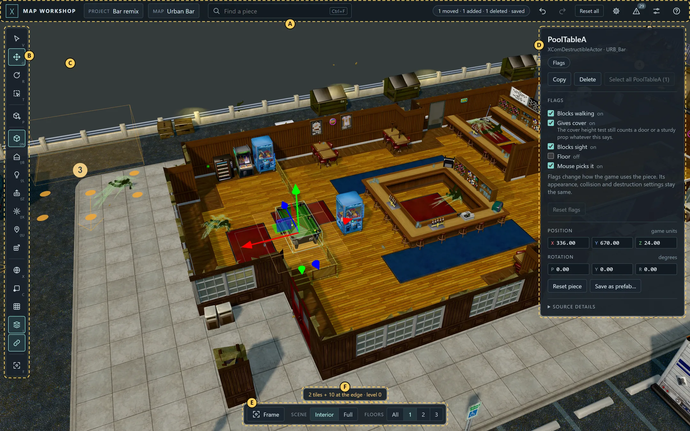
- Header: the project and the map with their menus, and on the right what has changed, undo, Build, Play, Settings and the view's menus. More
- Tool strip: select, move, rotate, add and draw, the Views list (buildings, lights, landing zones, effects, spawn points, diagonal cover, the map grid), and how pieces snap. More
- The view: the map. The coloured arrows on the selected piece are the Move tool's handles. More
- Piece panel: what is selected, with Copy, Delete and its exact position. More
- Bottom bar: frame the view, play area or everything, and which floor to cut down to. More
- Tile readout: how many tiles the selected piece covers, and its level. More
Header and menus
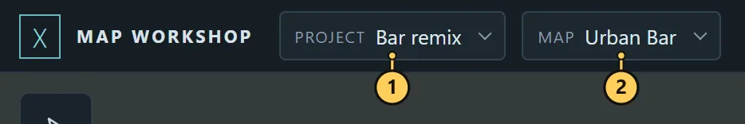
- Project shows the open project's name (a dot after it means unsaved changes) and opens the Project menu: save, open, close, the recent projects and the project manager.
- Map shows the base map and opens the Map menu: change the map (M), its missions, its picture, its grid, and Clear map.
On a map that serves more than one mission, a Mission picker shows to the right of Map. It chooses which mission's extra objects are shown (see what a mission adds) and which mission Play plays. With a project open it lists the project's missions, the kinds the project adds marked (added).

- What has changed: how many pieces are moved, added and deleted, how many lights, buildings, and effects or sounds are edited, a resized grid and changed landing zones, and whether that is saved: "not saved" with no project, then "unsaved" or "saved".
- Undo (Ctrl+Z).
- Redo (Ctrl+Y).
- Reset all puts the whole map back to the original: added pieces go, deleted ones return, moved ones go home, groups end, your buildings go and the map's own are restored, effects and sounds and the diagonal cover marks go back as the map has them, and the grid, the landing zones and a clear are undone. It is one undo step, so Undo brings your edits back.
- Build (Ctrl+B) makes the project's variant. It is greyed until the edits are saved as a project. More
- Play starts XCOM in a battle on the project's build, or with no project open, on the original map. More
- The arrow joined to Play opens the Game menu: the test squad, the game's map records, and the installs the editor works with.
- Settings (the gear): the game install the editor reads and its checks, and the cache. More
- Import notes: what the editor couldn't read exactly from the map (a material drawn in an approximate colour, say), with their count. They are about the picture, not about your edits.
- View options: lighting, light markers, tile grid and more. More
- Controls and shortcuts: a short list of every key, the editor's version, and a link to this guide.
Items 3 to 6 show once something has changed. While the project manager's build queue runs, a chip beside the count follows it (Building 2 of 5, Queue stopped, 5 built, 1 failed); a click on it opens the manager.
The four menus
| Menu | Opened by | What it holds |
|---|---|---|
| Project | The Project button | Save, Save as…, Open…, Close project, the recent projects, and Manage projects…. |
| Map | The Map button | Change map…, Map settings…, Missions…, Map picture…, Map grid, and Clear map…. |
| Game | The arrow joined to Play | Test squad setup…, Game maps…, and the Installs. |
| Settings | The gear | Game install and checks…, and Cache everything…. |
The Map menu
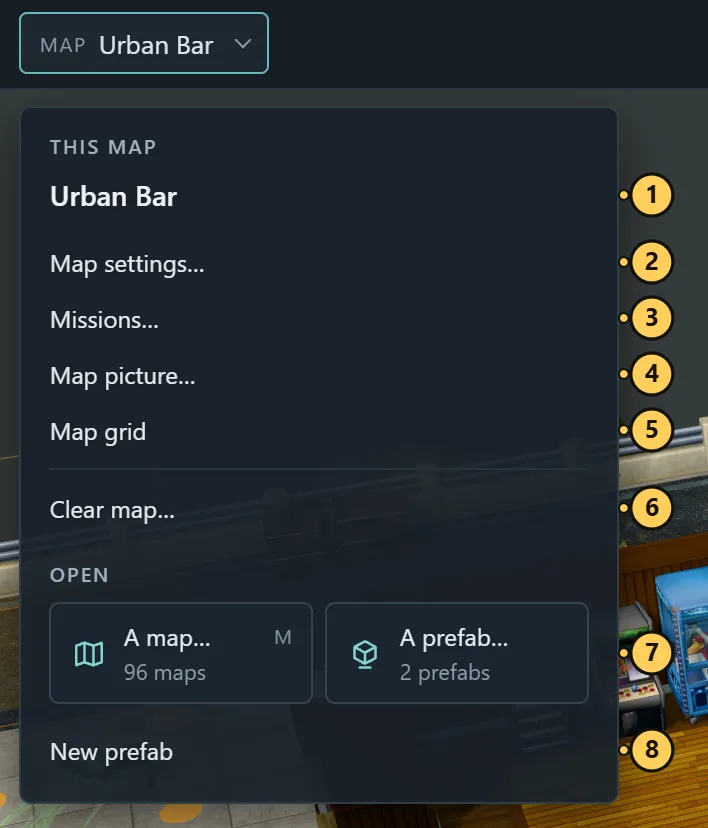
- Change map… (M) opens the map browser.
- Map settings… lists the sun, moon and sky light, sets the map's background sound, and what Long War Rebalance is told of the map. More
- Missions… chooses the missions the project is for. More
- Map picture… sets the picture the game shows for the map on its mission screens. More
- Map grid shows the play area's handles, as the last row of the tool strip's Views list does. More
- Clear map… takes every piece off the map. More
Items 2 to 6 are the map's own. In the prefab builder, where there is only the map to change, the button opens the map browser at once.
Tool strip
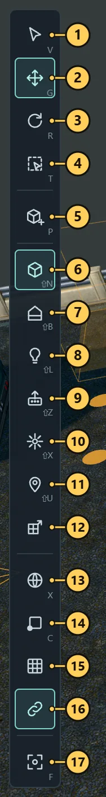
- Select (V): click pieces without any handles in the way.
- Move (G): arrows on the selection. Drag an arrow to move along it, or a small square between two arrows to slide across a plane.
- Rotate (R): rings on the selection. Drag a ring to turn about its axis.
- Box select (T): draw a box around many pieces to select them all at once. More
- Add (P) opens the piece list, to place more of any piece the map has, a piece of another map, or a new light. Hover it for the Build menu: walls, rooms, floors, roofs and ground drawn by dragging.
- Views: which view is on, by its icon (lit for any view but the normal one). Rest the pointer on it for the Views list, or click it to keep the list open: the views, each with its key, and Map grid.
- Axes (X): the handles follow the world's axes, or the piece's own (useful for a piece that stands at an angle).
- Pivot (C): where the handles sit, and what the selection turns about. At first, the piece's own origin, usually one of its corners, so a turned piece swings round that corner. Lit, the middle of the selection, so a piece turns in place. With snap at 96, the middle keeps to the nearest tile centre or corner, so pieces on the tiles stay on them (a piece one tile by two still moves half a tile when turned). A typed turn in the piece panel turns about the same point.
- Snap cycles through three settings; the button's corner shows which. Off, smooth; 24, steps of 24 units and 15°; 96, whole tiles (96 across, 64 up) and quarter turns. It governs every move, size and turn: more.
- Linked pieces (on at first): moving a piece also moves what was placed with it. Turn it off to move one piece of a set. A car's parts, a van's, and a door with its frame always move together.
- Frame the selection (F, or double-click a piece): the camera goes to it.
A lit button with an outline is on. Hover any button for a reminder of what it does.
The Views list
A view chooses what a click selects; all but the normal one draw their own things over everything. One view is on at a time, and the Views button shows its icon. Rest the pointer on the button for the list, or click the button to keep it open until you click elsewhere. A click on a row, or the row's key, turns that view on; pressing the key of the view that is on, or Shift+N, goes back to the normal view.
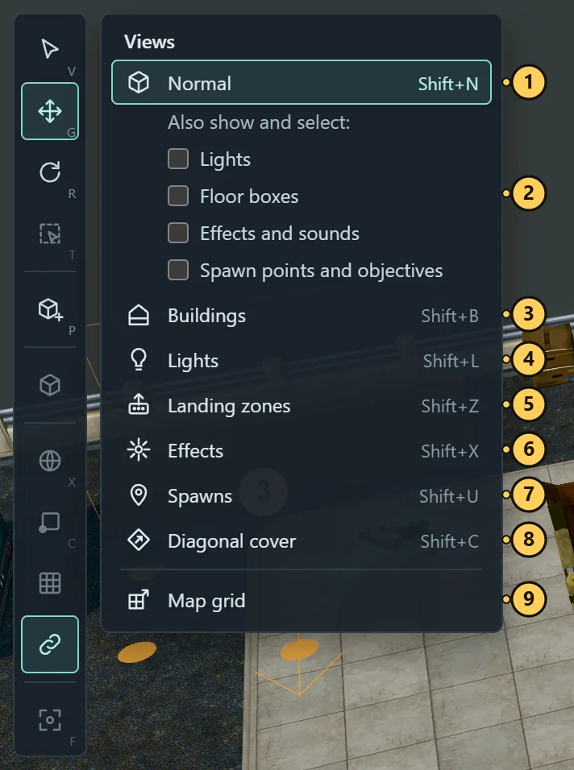
- Normal (Shift+N): pieces are selected.
- The switches of the view that is on stand under its row: here the Normal view's four, Lights, Floor boxes, Effects and sounds, and Spawn points and objectives.
- Buildings (Shift+B), where a building's floor boxes are drawn and fitted. While it is on, only boxes can be selected. More
- Lights (Shift+L) shows the map's lights as markers you can select and edit. While it is on, only lights can be selected. More
- Landing zones (Shift+Z): only landing zones are selected, drawn over everything. More
- Effects (Shift+X): the map's effects, sounds and lens flares as markers drawn over everything. While it is on, only they are selected. More
- Spawns (Shift+U): the map's spawn points and the mission's objectives as markers drawn over everything: where the aliens' pods start, the Meld, the drop-in points. While it is on, only they are selected. More
- Diagonal cover (Shift+C): the map's diagonal cover marks, drawn over everything. While it is on, only marks are picked. More
- Map grid: the play area's handles, to make the map's tile grid larger. It is not a view: it leaves the view on as it is. More
Snap: the steps of every move, size and turn
The Snap button (item 9) sets the steps of everything you move, size or turn in the view: the gizmo's arrows and rings, the white and blue handles of made pieces, gaps and cover blocks, a piece you place or paste, what you draw from the Build menu, and a position or turn typed in the piece panel.
| Snap | Across the floor | Up | Turns |
|---|---|---|---|
| Off | Smooth, to fractions of a unit | Smooth | Smooth |
| 24 | Steps of 24 units | Steps of 24 | Steps of 15° |
| 96 | Whole tiles (96) | Levels (64) | Quarter turns |
- The steps are counted from where the drag starts, so a piece, a face or a gap that stands off the grid keeps its offset as it moves. With the piece's own axes shown (X), the arrows step along them.
- To bring a piece onto the grid, use Grid (L) in the piece panel's Align section.
- A typed position or turn with snap on is taken as a move from where the piece stands, in the snap's steps; the hint line says so while you type. With snap off it is taken as typed.
- Some things keep to the tile grid whatever the snap: a building's floor boxes (and a group or prefab with a building in it), the map grid's sides, spawn points, diagonal cover marks, and a landing zone's turn.
The Normal view's switches
With the Normal view on, four switches stand under its row in the Views list (item 2 above). They let the normal view show and select more than pieces, so a house can be handled with its lamps, its building and its smoke in one go:
- Lights: the lights are drawn and can be clicked, moved, copied and deleted with pieces. A light's colour, radius and cones are still set in the Lights view.
- Floor boxes: your buildings' boxes are drawn, and a building is selected whole, by a click on a box's edge.
- Effects and sounds: their markers are drawn, and they are clicked, moved, copied, deleted and grouped with pieces. Their values are still set in the Effects view.
- Spawn points and objectives: the Spawns view's markers are drawn too. A click on one picks it ahead of the piece behind it, to move and edit as in that view.
All four are off whenever a map opens. The Lights, Effects, Spawns and Diagonal cover views have switches of their own under their rows, shown while they are on: each is in that view's section.
The view and the camera
| To | Do this |
|---|---|
| Orbit | Drag with the left button. With Keys move along the view ticked, the drag looks round instead: the camera stays where it is and only turns and tilts |
| Pan | Drag with the right button, or hold W A S D or the arrow keys (Shift moves faster) |
| Move along the view | Tick Keys move along the view in View options: then W and S (Up and Down) move forward and back the way the camera faces, climbing or descending with its tilt, and A and D (Left and Right) sideways |
| Turn | Hold Q or E to turn the view left or right (Shift: faster). The camera circles the point it looks at, or with Keys move along the view, turns where it stands |
| Change the camera's speed | The three sliders under Camera in View options: moving, turning with the keys, and turning with a drag |
| Zoom | Scroll |
| Go to a piece | Double-click it, or select it and press F |
| See the whole map again | Frame in the bottom bar |
| Select | Click a piece. Ctrl or Shift+click adds one to the selection, or takes it out |
| Clear the selection | Esc |
- The handles' colours: red is the game's X, blue is its Y, and green is up (Z). The piece panel uses the same letters.
- The tile grid shows only around the selected piece, or the piece being placed. The game's tiles are 96
units across and 64 up.
- Filled tiles are the ones the piece reaches well into; outlined ones it only touches at the edge.
- Tiles turn blue when the piece floats above the floor under it. A floating piece may give no cover.
- The readout above the bottom bar counts them: "2 tiles + 10 at the edge · level 0".
- While you drag a handle, a hint says what is moving. Esc cancels the drag.
- Hold Shift as you take a move handle (an arrow or a plane square) to drag a copy along it. The original stays where it is.
Bottom bar and floors
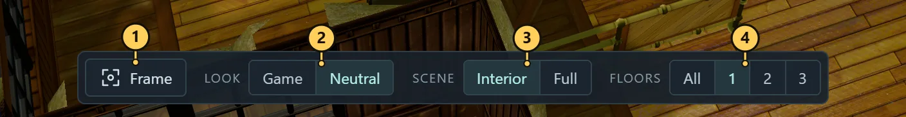
- Frame fits the whole view in the window: the play area in Interior, everything in Full.
- Scene: Interior shows the area the game plays on; Full adds the backdrop around it (distant buildings, the street beyond the edge). Interior draws a piece that reaches into the area whole, a car across the edge included, unless it stretches more than four tiles past it.
- Floors: All shows buildings whole, roofs closed. A number cuts every building down to that floor, so you can see and edit inside. With a floor chosen, a new floor box in the Buildings view starts at that floor's height.
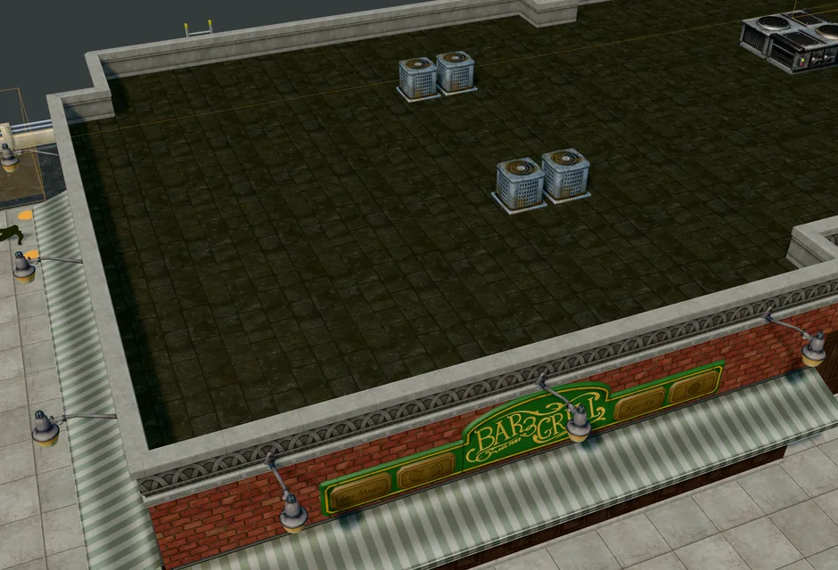

Each part of the bar shows only on maps where it applies: a map with no buildings has no Floors.
View options
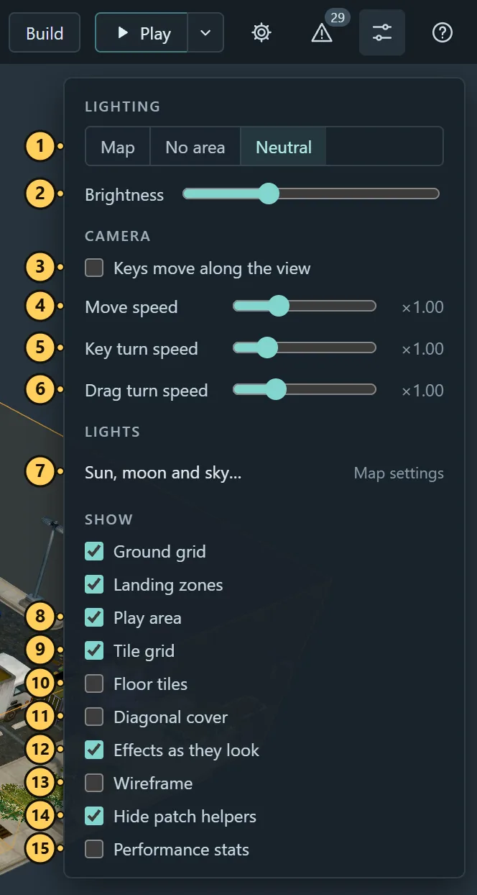
- Lighting: Neutral is plain, even light, best for editing. Map uses the map's own lights, as edited; No area is the same without the glow of lit surfaces. Both are approximations of the game's lighting.
- Brightness of the view.
- Keys move along the view: W A S D and the arrow keys move the camera forward, back and sideways the way it faces, instead of panning across the map, and dragging looks round from where the camera stands instead of orbiting. More
- Move speed: how fast W A S D and the arrow keys move the camera, from a fifth of the usual speed to three times it (Shift still triples it).
- Key turn speed: how fast Q and E turn the camera.
- Drag turn speed: how fast a drag orbits, or looks round with Keys move along the view. The three speeds are kept on this computer; double-click a slider to put it back to ×1.
- Sun, moon and sky… opens Map settings, which lists the lights that have no place.
- Play area (B): faint amber walls round the area the game plays on, its level volume: units can't leave it.
- Tile grid around the selection.
- Floor tiles: where the game has floor, coloured by the piece that carries each tile. Hover a tile to name its piece; click to select it.
- Diagonal cover: the diagonal cover marks drawn in the normal view too, never picked there: amber the map's own as it is, teal the ones your project adds or changes, or that follow their piece. They are edited in the Diagonal cover view.
- Effects as they look: each effect drawn where it stands, moving. Untick it for a busy map on a slow computer; the markers and the editing stay. More
- Wireframe.
- Hide patch helpers: untick to see Long War Rebalance's invisible cover and blockers, as a wireframe. Shown only on maps that have them.
- Performance stats: a line of counts (pieces, triangles, draw calls).
Above Play area, on a whole map: Ground grid and Landing zones (more). The Lights view's own switches, Area lights and Outline the pieces a light reaches, are under its row in the Views list: Lights.
Map browser
Change map… in the header's Map menu (or M) lists every map your install plays, in sections by mission type. A map that serves several types is listed under each.
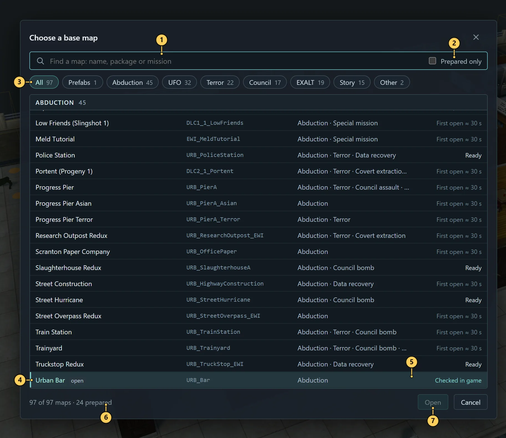
- Search by the map's name, its package or a mission.
- Prepared only hides maps the editor hasn't read yet.
- Mission types: click one to show only its section.
- A map: its name, its package (the file's name in the game), and the missions it serves.
- Its state: Checked in game (the editor's work on this map has been checked in the game), Ready (already read: opens at once) or First open ≈ 30 s (the editor reads it from the game when you open it).
- How many maps match, and how many are ready.
- Open (or double-click a map, or Enter).
Pieces
Selecting pieces, changing them, adding more, drawing your own, and saving sets of them as prefabs.
Piece panel
The panel on the right appears when something is selected.
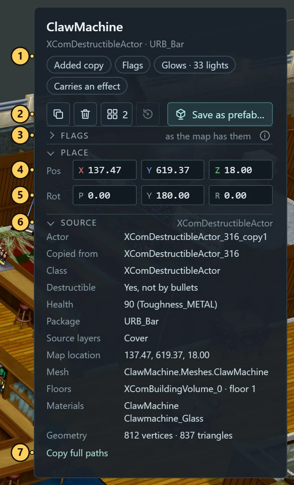
- What it is: the piece's name, its kind and its map, then chips with what you should know about it (listed below).
- The buttons, each named when the pointer rests on it: Copy (Ctrl+C; Ctrl+V then shows the copy at the cursor and a click places it), Delete (Del), Select all of a kind with its count, and Reset piece, which puts the selected pieces back where the map has them. At the right, Save as prefab… saves what is selected as a prefab.
- Align to: Grid (L) puts the piece on the grid in the snap setting's steps; Level and Game pose show for the pieces they are for.
- Flags: what the game does with the piece (walking, cover, sight, floor, the mouse), to change. Folded, its line says whether they are as the map has them.
- Place: its position in game units. Type a value and press Enter. With snap on, it is taken in the snap setting's steps.
- Its rotation in degrees: pitch, yaw (the turn about the vertical) and roll.
- Source unfolds the piece's records: its actor and mesh, whether it can be destroyed and its health, which building floor it belongs to, and what moves with it.
- Copy full paths copies the actor, mesh and material paths, for a bug report or for your own notes.
- Sections fold. A click on a section's name (Group, Align, Flags, Place, Source) folds it to one line that says what it holds, or opens it again. The panel remembers how you left each.
- The ⓘ beside a section's name shows or hides its explanations: how its handles work, what an option does, why something is greyed. What a thing is, and warnings, are always shown.
- A piece with settings of its own (a made wall, floor or ground, a room, a light, a cover block, a piece that can be broken) has its section first, above the others.
The chips
| Chip | What it means |
|---|---|
| Moves with 2 other pieces | Linked pieces: they were placed together and move together (a car's body and glass). |
| Added copy | A piece you added. Source names the piece it copies. |
| Off the grid | A ladder, door, car, van or fracturing piece that stands off the tiles and turns of its original: it builds, with a warning. Game pose in the Align section puts it back. Why |
| Group of 2 | It is in a group. |
| Glows · 3 lights | A glowing piece: its glow lights the map, and moves, copies and goes with it. |
| Carries an effect | A particle effect stands on it, such as a Skyranger's lights or a claw machine's, or the effects a prefab of the map placed round it (an alien vapour pod's smoke). The editor and the Build move, copy and delete them with the piece. A click on the chip opens the Effects view on them. |
| Mission loot | A collectible such as a UFO power core: the game counts it as loot at the mission's end, a damaged one as the damaged item. A copy counts too, and breaks like the original. A moved one still counts once; a deleted one no longer counts. |
| Mission script | The map's mission script uses this piece. Moved or deleted, the script still acts on the original, not on the copy: the Build warns. |
| Landing zone | One of the pieces Long War spawns the dropship's landing from. Moved or deleted, the landing breaks: the Build warns. A copy is an ordinary piece. |
| A package's name | The piece comes from a mission or from Long War Rebalance's patch, not from the map. It can be looked at, not edited. |
| Flags | One of its flags is off, or you changed one. |
Flags
The Flags section says what the game does with the piece, and lets you change it: a wall that units walk and see through, a sign the mouse never picks, a fence that gives no cover. It is folded until you click its name; its line says as the map has them, or how many you changed.
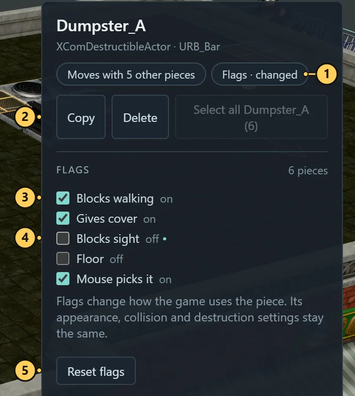
- The Flags chip: one of the piece's flags is off, or changed by you.
- Select all of a kind picked every dumpster of the map: six.
- The five flags, each with its state for the pieces picked (here 6 pieces). A flag marked ⓘ has something that limits it: point at it and the line under the rows says what.
- A flag you changed has a dot after its state: Blocks sight turned off for all six, so units see over them.
- Reset flags puts the map's back.
| Flag | When it is on |
|---|---|
| Blocks walking | Units can't walk through the piece: the game's pathing counts it. A piece lower than 60 over the bottom of its level (a hedge, a kerb) stops no one even so: the row and the Build say so. |
| Gives cover | A unit beside it can take cover behind it. |
| Blocks sight | Units can't see through it. |
| Floor | Units can stand on it. Off, the game finds no floor on it: they walk under or through it. |
| Mouse picks it | The cursor stops on it, as on a roof. Off, it looks through to what is behind: handy for a canopy or a sign over a street. |
- A click changes the flag for every piece you picked (not the linked pieces they move with: the group says so when there are some). It turns it on where some have it off, and off when all have it on. It is one undo step, and the edit count says how many pieces have flags changed. Reset flags puts the map's back.
- What a row says. Each row shows on, off, partly on or mixed (picked pieces that differ), and what limits it (in the line under the rows, for the row the pointer is on). A row is greyed, with the reason there, where the game never reads that flag for such a piece: a plain static mesh has only Floor, a door's mouse is its own, a ladder gives no cover by the game's usual test.
- Partly on is a prop the map set to be skipped by the pathing sweep: its tiles are still blocked where it stands, but walking and sight through it are not tested. Turning Gives cover or Blocks sight on opens that, and can change another row; the group then asks what that row should be before it changes anything.
- Walls, floors and ground you draw have the same five flags, set from what the Build makes of them: a made wall with Gives cover off gives none, one with Blocks sight off is seen through.
- Copies keep them. A copy, a pasted piece and a prefab carry the flags; a move keeps them; a delete and its undo keep them.
- The Build writes them on the piece itself and reads them back, and works the tiles out again around a piece whose walking, cover, sight or floor changed (the mouse alone needs none). Flags alone need no new lighting, so a project with only flags is built without relighting. A floor taken from under a ladder's end, or from the tiles a landing or a mission needs, is warned of.
- What they don't do. A flag is a setting the game reads; it doesn't change the piece's collision. A piece that collides with nothing is touched by no trace whatever its flags say (the panel says so), and a shot still meets a piece that collides, whatever Blocks sight says. An open door never blocks; with Blocks walking or Blocks sight off, units walk or see through it when it is shut too.
Select all of a kind
The Select all button, beside Copy and Delete (four squares and a count; its tooltip names the kind, as in Select all TV_BarRow), selects every piece drawn with the same mesh as the picked one, so you can change all of a kind at once, their flags for one. Shift+click adds them to the selection. With a box drawn, it takes only those whose middle is inside the box. Hidden and deleted pieces, a mission's or Long War Rebalance's pieces, cover blocks, lights and floor boxes are left out. Selecting changes nothing in the project and is not an undo step. A picked effect or sound has a Select all of its own: Effects and sounds.
Box select
To select many pieces at once, a whole house for one, draw a box around them.
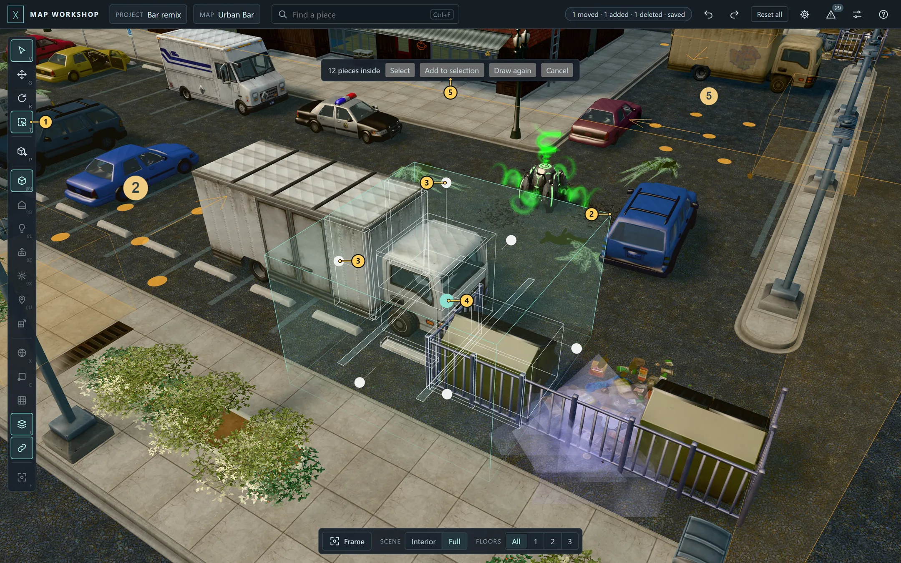
- Box select in the tool strip (T) arms the tool: the cursor becomes a cross. Press on the ground at one corner of what you want, and drag to the opposite corner.
- The box. It starts a little under the ground you drew on and reaches up to the top of the map's grid. The pieces it would take are outlined in white, and follow as you change it.
- A white dot on each of its six sides: drag one to stretch that side. Pull the top down to take one storey only.
- The dot in the middle: drag it to move the box over the ground.
- The bar says how many pieces are inside. Select (Enter) makes them the selection. Add to selection (Shift+Enter) keeps what was selected as well. Draw again starts a new box, and Cancel (Esc) puts it away.
- A piece is inside when its middle is. A wall that sticks out of the box a little is still taken; a neighbour's wall that pokes in is not. Check the white outlines before you select.
- A group comes whole when any of its pieces is inside, and so does a set of linked pieces, as with a click.
- Lights and buildings are taken when they are shown. With the Normal view's Lights switch on, the lights inside are taken with the pieces; in the Lights view, only lights are. With its Floor boxes switch on, a building, yours or the map's, is taken whole when the middle of one of its boxes is inside. With its Effects and sounds switch on, the effects, sounds and lens flares inside are taken too; in the Effects view, only they are. The bar counts them.
- Only what is drawn is taken. With a floor chosen in the Floors buttons, the hidden floors above are left out. Pieces of a mission or of Long War Rebalance's patch are never taken.
- For an outline a box doesn't fit, an L-shaped house for one: select one part, draw again over the other, and use Add to selection.
- The box is only a tool: it is not saved with the project, and making or changing it is not an undo step.
- With a box drawn, Select all of a kind takes only the pieces of that kind inside it.
Groups and Align
With two or more pieces selected, the piece panel gains a Group section. Its Align section shows for one piece too.

- The group. Group (Ctrl+G) joins the selected pieces. A group selects and moves as one: picking any of its pieces picks them all. It shows in gold.
- Ungroup (Ctrl+Shift+G) ends the group: its pieces are separate again. To move one piece of a group on its own, ungroup, move it, and group them again.
- Break together in the game: when one of the group's breakable pieces is damaged or destroyed, the others are too. Use it for a cover piece made of two, so it can't be left half standing. A cover block in the group goes when one of those pieces is destroyed. Grouping is the editor's alone; this option is what reaches the game.
Add to group shows beside Group when one whole group and pieces (or lights, or buildings) that are in no group are selected. It puts them into that group, which keeps its options, where Group would make a new group round them all. It is one undo step.
Groups inside groups
A group can hold other groups. Group a table and its chairs, group a counter and its stools, then group the two as a room: each stays a group of its own inside the room.
- To make one: select pieces and whole groups together (a click on any piece of a group picks the group), then Group (Ctrl+G). The groups are kept as they are inside the new one.
- A click picks the outermost group the piece is in. The panel says how many pieces it has and how many groups are inside.
- Ungroup works one level at a time, from the outside in. Ungroup the room and the table group and the counter group are there again, each selecting as one. Ungroup one of those to reach its pieces.
- Copy and paste copy the whole tree: the copy has the same groups inside it.
- Break together is each group's own option, over the pieces it holds itself. The groups inside it break by their own.
Lights and buildings in a group
A group can also hold lights and buildings (yours or the map's), so a house keeps its lamps and its floor boxes when it is moved or copied.
- To add them: have them in the selection when you press Group. Lights are selected with the Normal view's Lights switch on; a building with its Floor boxes switch on (more). Box select takes all three at once.
- They follow the group even when they are not drawn. Pick any piece of the group and its lights and floor boxes move, turn, copy and are deleted with it, with both switches off too. (In the Lights view and the Buildings view each light and each box is on its own.)
- A group with a building moves by whole tiles and turns by quarter turns, whatever the snap, so the floor boxes stay on the tile grid.
- A copy of the group has its own lights and a new building with the same floors.
- Lights and buildings take no part in Break together.
- Effects, sounds and lens flares join a group the same way: select them with the pieces, with the Normal view's Effects and sounds switch on, and press Group. They then move, copy and go with the group like its lights.
- A cover block over a piece that can be destroyed: group the block with the piece and tick Break together in the game. When the piece is destroyed the block goes too, so no invisible wall is left. One breakable piece is enough, and nothing else destroys the block. An invisible floor stays.
Align
The Align section puts the selection on the grid or a level, and with two or more pieces lines them up with one of them.
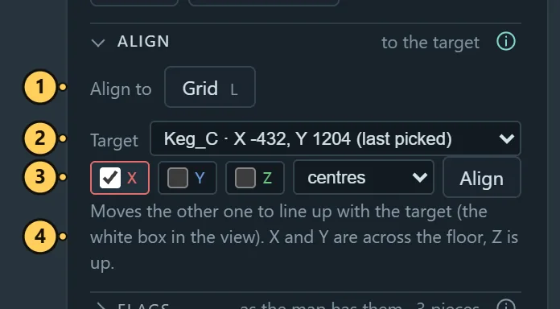
- Align to, for one piece or more, each one undo step:
- Grid (L) moves the selection's pivot to the nearest step of the snap setting, counted from the tile grid's corner and lowest level, and turns it to whole steps of its turn. With snap off, to the nearest tile corner and level, and a quarter turn.
- Level shows for a floor piece: it goes up or down to its height in its map moved by whole levels (64 units), the nearest, so it lies level with the map's floors. A copy goes by its original's height.
- Game pose shows for a ladder, door, car, van or fracturing piece: it goes to the nearest place and turn its rule allows, whole tiles from its original.
- Target: the piece or group the others line up with. It is the last one you picked unless you choose another here. A white box marks it in the view.
- Axes and edge: tick any of X, Y (across the floor) and Z (up), choose what lines up (centres, low edges or high edges), then Align. The others move; nothing turns. It is one undo step.
- What will happen, in words: shown by the section's ⓘ.
Items 2 to 4 show with two or more pieces or groups selected. What moves as one stays together: a group, and with Linked pieces on, linked pieces.
Add: the piece list
Add (P, or a click on its button) opens Add a piece. Under This map it lists one entry for each distinct piece the map has placed. It lists the original map, so a piece you deleted still has its entry. All maps lists the pieces of the game's other maps, and Prefabs the sets of pieces you have saved. The list holds the game's pieces; walls, floors and ground of your own size come from the Build menu, which shows when the pointer rests on the Add button.

- Filter by name, kind or material.
- Kind uses the same categories in This map, All maps and the prefab builder. Floors finds flat pieces that carry saved floor tiles. Lights has point and spot lights. Invisible has cover blocks and invisible floors. Spawn points has a new pod and a new Meld point (on a map with them) and a new no-spawn volume. Diagonal cover has a new mark.
- Where: the play area or the backdrop, on maps that have a backdrop.
- Sort: A to Z, largest first, or most used.
- An entry: its picture, name, kind, and size in game units (width × depth × height); on the right, how many the map has. An entry is everything a copy would take along: a van is one entry of several parts.
- How many pieces and lights the list holds.
- Close (or P again).
- All maps: pieces from the game's other maps.
To place one: click an entry. A see-through preview follows the cursor. R turns it a quarter turn (Shift+R the other way). Click in the view to place it; Shift+click places it and keeps going. Esc stops. The new piece is selected, ready to move or turn.
A new pod, Meld point or no-spawn volume: choose it under Kind: Spawn points, then click the tile it is to stand on. The Spawns view comes on. A new point is a copy of the map's first plain pod or first Meld point, with its values, on that tile, as high above its floor as the original stands above its own; this works after a clear too, which deletes the map's own. A new no-spawn volume is the size of the map's first one (3 by 3 tiles and four levels high on a map with none), over whole tiles round the click, its bottom on the level of the floor there. Esc stops.
Pieces from other maps
All maps lists the pieces of every map in the game install, so a lamp post from the Police Station or a wall from an alien ship can stand in the map you are editing. The first time, the editor reads the game's maps (Read the game's maps: about half a minute, once; nothing in the game is changed). After that each piece is read from the game the first time you use it; Cache everything…, under Settings, reads them all at once instead.
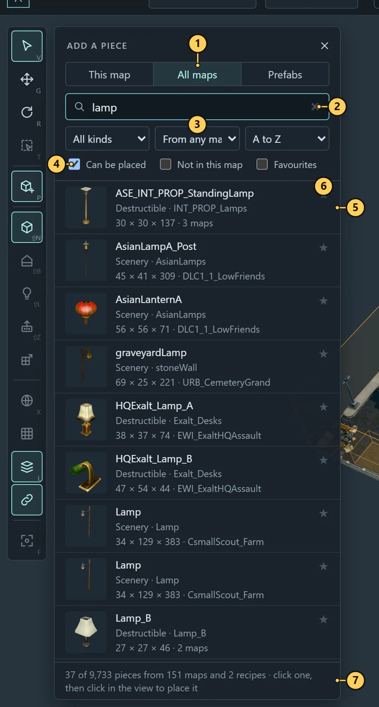
- All maps, beside This map. The editor remembers which one you used last.
- Filter by name, kind, material or the name of a map.
- Kind, map and sort: the middle menu keeps only the pieces placed in one map. Sort A to Z, largest first, most used, in most maps, or recently used.
- Can be placed keeps the pieces the Build can bring into another map today: scenery, props that break, walls and floors that break, doors, cars, vans, ladders, collectibles and bodies. A car, a van or a door with its frame is one entry and is placed as one; a van brings the room inside its box. Untick it to see the rest, greyed, each saying why not: mostly helpers that are hidden in their own maps. Not in this map leaves out what this map has itself. Favourites shows only the starred pieces.
- An entry: its picture, name, kind, size, and the map it comes from (or in how many maps it stands). Here marks a piece this map has too.
- The star makes it a favourite. Favourites and recently used pieces are kept with your settings, for every map and project.
- How many pieces match.
Placing one works as from This map: click it, then click in the view. The piece panel shows the map it is from. It stands on this map's tiles as it stood on its own map's, so with Snap at 96 a wall or a door keeps to the tiles as there (Game pose in the Align section puts one back on them). A ladder needs floor at its foot and at its top, as a copy of one of the map's own does; put it on an outer wall with nothing standing at its foot. The Build copies the piece into your map with the meshes, materials and textures it needs, so the built map grows a little (the entry's tooltip says by how much at most).
Lighting. Built with Bake the lighting, a piece from another map is lit for where it stands, and the pieces around it take its shadow. Built without, it keeps the light it had in its home map, so it can look too dark or too bright where you put it.
Effects, sounds and lens flares of the other maps are listed here too, under their own kinds in the Kind menu: Effects from other maps.
Walls, rooms, floors, roofs and ground you draw
The game's pieces come in the sizes its maps happen to have. The Build menu makes pieces to your own size and place: a wall of any length, height and thickness, at any angle, a room, a storey floor, a roof, and ground. Each is drawn by dragging, sized afterwards by its handles, and given the look of any of the game's walls, floors or ground.
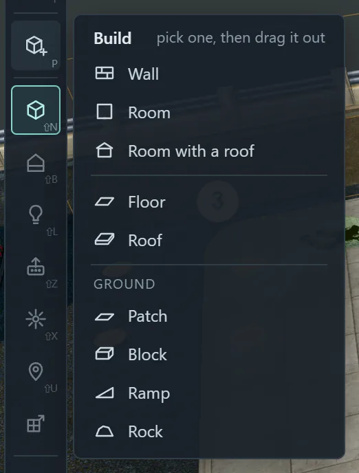
- Rest the pointer on the Add button. The menu shows after a moment. (A click on Add opens the piece list instead.)
- Pick a tool. Its button stays lit while it draws, and a hint at the top of the view says what to do.
- Press on the ground at one corner, drag to the other, let go. A wall is dragged from one end to the other.
- The tool stops after one piece. Hold Shift to keep drawing; Esc stops.
The drawing follows the snap setting:
- 96: on the tile edges, by whole tiles, and a wall along a tile line.
- 24: the first corner on the grid's steps of 24 from its corner, the length in steps of 24, and a wall's direction in steps of 15°.
- Off: exactly as dragged, any length and angle.
Only a wall follows the drag's angle; a room, a floor, a roof and ground are drawn square to the map, and the gizmo turns them afterwards.
| Tool | What it draws |
|---|---|
| Wall | One wall from where you press to where you let go, as tall as its look at first (two storeys for the Bar's inside wall). |
| Room | Four joined walls round the rectangle you drag, with a doorway in the side nearest you. |
| Room with a roof | The same with a roof on its walls and a building round it, so the roof is cut away when the cursor is inside. |
| Floor | A storey floor, a storey over the floor you press on. Units walk on it. |
| Roof | A roof on the tops of the made walls round it, or two storeys over the ground where there are none. |
| Patch | Flat ground level with the ground it lies on: it covers holes and paints the ground. |
| Block | Raised ground. Units walk on it. |
| Ramp | A slope rising toward where the drag ends. |
| Rock | A rock in the rectangle: it stands in the way and gives cover by its height. |
- Everything is drawn plain, in light grey, and its look is chosen afterwards: the panel's Look row reads none chosen until then. A plain piece builds all the same, in its kind's usual look (the Bar's inside wall, floor or roof, or asphalt), and the build's notes say so.
- They are real pieces to the game. Walls, floors and roofs break a fragment at a time, as the game's do, and a break passes between pieces that touch. Ground doesn't break.
- Each kind has a section of its own at the top of the piece panel: Wall, Floor, Ground or Room. Its first line gives the piece's size in game units (long, thick and tall for a wall), and its ⓘ shows how its handles work and what it does in the game.
- They copy, move, turn, group and take flags as other pieces do, and stand anywhere: no grid rule holds them.
- They are drawn in the prefab builder too, from its Build menu, and saved with the prefab.
Sizing a made piece: its white handles
A picked wall, floor, roof or ground shape has a white handle on a stem out of each face it is sized by. Drag one and only that face moves: the opposite face stays, and so does the piece's pivot, so its gaps, holes, damage and pattern stay where they are in the world. The face moves the distance dragged in the snap setting's steps: smoothly with snap off, in steps of 24, or by whole tiles across and levels of 64 up. Esc during the drag puts it back, and each drag is one undo step.
- A wall: its two ends (its length), its top, its bottom (under the floor line), and the face toward the camera (its thickness).
- A floor or roof: its four sides, its top and its underside (its thickness).
- A ground shape: its four sides, its top (a block's top, a ramp's high edge; a patch has none) and its bottom.
- A gap past a face that moves in is cut to it, and one the piece no longer holds goes: the hint says so while you drag. A floor's holes do the same.
- No size limit. The Build makes a long or tall wall, or a large floor, as several pieces the game takes (16 tiles at most each, joined): the joints don't show, and they break as one.
- A piece drawn with snap at 96 is made on the tiles; its first size edit lets it take any size from then on (Ctrl+Z puts it back as it was).
- Pivot to corner, in the Wall, Floor and Ground sections, moves the piece's pivot, where the gizmo sits and what it turns about, to its low corner. Nothing moves in the world. Use it after the face the pivot stood on has moved away from it.
A wall
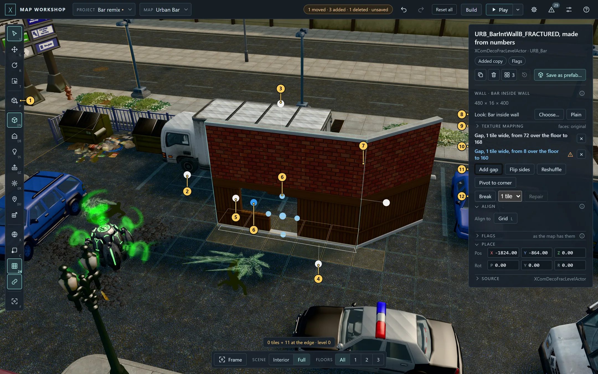
- Add: rest the pointer on it for the Build menu.
- An end's white handle lengthens or shortens the wall; the other end stays.
- The top's handle makes it taller or lower.
- The bottom's handle, under the floor line, moves its bottom down or up.
- The face's handle, on the face toward the camera, makes it thicker or thinner.
- A gap's blue handles, a gap at a time: the picked gap's five (its middle moves it along the wall and up or down, its sides, top and bottom size it), and every other gap's middle alone, which picks it.
- The mitred corner where the second wall, drawn from the first's end, meets it. Corners
- Look: Choose… opens the look picker; Plain goes back to no look.
- Texture mapping, folded: how its faces take their pattern. More
- The gaps, one line each: its size, a warning mark where it plays oddly (point at it to read why), and × to remove it.
- Add gap cuts a gap shaped as the game's doorways in the free tile nearest the middle. Flip sides turns the wall round where it stands, so its two faces swap. Reshuffle gives it another break pattern: it looks the same until it breaks. Pivot to corner: above.
- Break and Repair: the wall built already damaged. More
- A gap is a doorway or a window by its shape. Add gap starts as a doorway: one tile wide, its top 160 over the floor, a threshold of 8 left under it so nothing shows under a door. Drag its middle up to make a window.
- A gap's handles reach the wall's edges. A side dragged to the wall's end cuts the wall away to that end, the bottom dragged to the floor cuts down to the wall's bottom, and the top dragged past the wall's top cuts through it. A gap never takes the whole wall.
- A gap's steps follow Snap: smooth with snap off, 24 at 24, and at 96 whole tiles along the wall and levels of 64 up, the distance dragged. Alt gives steps of 8. Del with a gap's handle touched last takes out that gap only.
- What a gap does in the game goes by its heights, and its line in the panel says it. Units walk through a gap that is open at 64 over the floor (a doorway, over its threshold). They climb through one that starts higher and leaves low cover under it (a window), as through the game's windows. They see and shoot through one that is open at 96 over the floor: a doorway and a window both. All of it holds where the lines between the tiles' centres cross the wall, on the map's tile grid, wherever the wall stands and at whatever angle; a gap that no such line crosses does nothing. The Build warns of a gap that plays oddly: a doorway with no door (a unit in it has cover toward its sides), a gap walked through over a wall that gives cover, a gap too low to walk through, a window that sight doesn't cross.
- A door comes from the piece list: place one of the game's doors in the doorway. Its line in the panel says when a doorway has none.
- A wall standing inside a row of tiles, over their middles rather than on a tile edge, takes those tiles: no one stands in them, and it gives cover to the tiles either side, as a wall on a tile edge gives its two neighbours. The Wall section says so (its ⓘ), and so does the Build. A gap over such a tile is that tile: units stand in it and walk through it when the gap leaves them room (40 by 40 round the tile's middle, from 60 to 92 over the floor), and otherwise no one goes through it. No one climbs through it. The Build warns of a doorway there that leaves no room.
- Taller than its look: a wall made taller than its look's own height shows this row in its section. Repeat storeys stacks the look's storeys, the top one shortened or lengthened by what is left; Stretch makes one profile over the whole height, the bands at its bottom and top keeping their sizes and the face taking the rest. In the game such a wall breaks a storey at a time either way.
- In a group that breaks together, a prop, a door or a cover block goes when the wall behind it does: Groups.
- In a building's floor boxes a made wall cuts down with the others: Buildings.
Corners: mitred ends and Join ends
Walls that meet are joined, as the game's walls are: the Wall section says how, and a break passes from one to the other.
- Two ends at the same point, within a unit, meet in a mitred corner when the walls stand at an angle of 30° or more: each end is cut on the one upright plane through the corner, so the faces meet with no gap and no overlap, at any angle, right angles too.
- Two ends in line meet end to end.
- An end against another wall, on its line between its ends, stops against that wall's near face, cut along it.
- At an angle under 30°, or with three or more ends at one point and no two in line, the ends meet square.
- Join ends: pick two walls (Ctrl+click) and choose Join ends in the Wall section. The nearer end of each goes to where their lines cross, each wall's pivot staying where it is, so they meet in a mitred corner; two walls in line meet halfway between their nearest ends. It is one undo step. Walls that run alongside each other apart have no point to meet at: the hint says so.
- Hold J while you drag a wall's end to take it to the nearest end of another wall, within 64 units: the two then meet in a mitred corner.
- Walls drawn with snap at 96 and not sized since meet as the game's own walls do, at the tile edges: at a corner one runs through to the other's far face. Join ends on two of them makes them mitre.
A room
A room is four walls drawn in one drag, joined at their corners, with one doorway. It arrives as one locked group: a click on any of it picks the room, and it moves, turns and copies whole.
- The Room section of the panel has a Look row for all its walls and, for a room with a roof, one for the roof. Lower and Taller change all its walls by a storey (a room with a roof keeps its height).
- Room with a roof also brings the roof and its building's floor boxes, in the same group, so the roof hides when the cursor or a soldier is inside.
- To change one wall (its gaps, its length, a look of its own), Ungroup the room and pick the wall. Group the pieces again afterwards if you like.
Floors and roofs
- Its white handles size a floor or roof: its four sides, its top and its underside (sizing).
- Add hole cuts a hole one tile square in the free tile nearest the middle, for a ladder or stairs. Its blue handles move and size it, in the snap setting's steps; a hole past the edge goes.
- Reshuffle gives another break pattern.
- Which tiles it is floor on. The game looks for a tile's floor on one line straight down through the tile's middle, so a made floor is floor on the tiles whose middle it covers, and not on a tile at its edge it covers only in part. Where it stands off the tile lines, the Floor section's first line ends floor on 6 of 12 tiles, and the tile grid round it fills the tiles it is floor on and outlines those it covers in part (the readout under the view counts both). The Build notes such tiles. A hole is no floor.
- A floor is walked on. The Build gives each made floor and roof cursor floors of its own over its footprint, starting just under it (the cursor's floors). In a building (a room with a roof, or floor boxes drawn round it) the mouse wheel then stops on the ground, on the floor and on the roof in turn. A floor in no building is picked by the mouse on every storey, as the game's overpasses and canopies are, and the ground under it only from beside it: the Build warns of one.
- A floor turned off the quarter turns has its cursor floors in steps, a box round its part of each tile it reaches; the Build notes how many. A floor tipped (pitched or rolled) builds as drawn, and the Build warns once: its cursor floor is the box round it, so the cursor may not land on it where it slopes; past about 10 degrees a unit on it gets no cover, and past 45 it is no floor.
- A roof is cut away with its building's top floor when the cursor is inside, and takes no clicks in the game. Draw a box for it if it isn't a room's: Buildings.
Ground: patch, block, ramp and rock
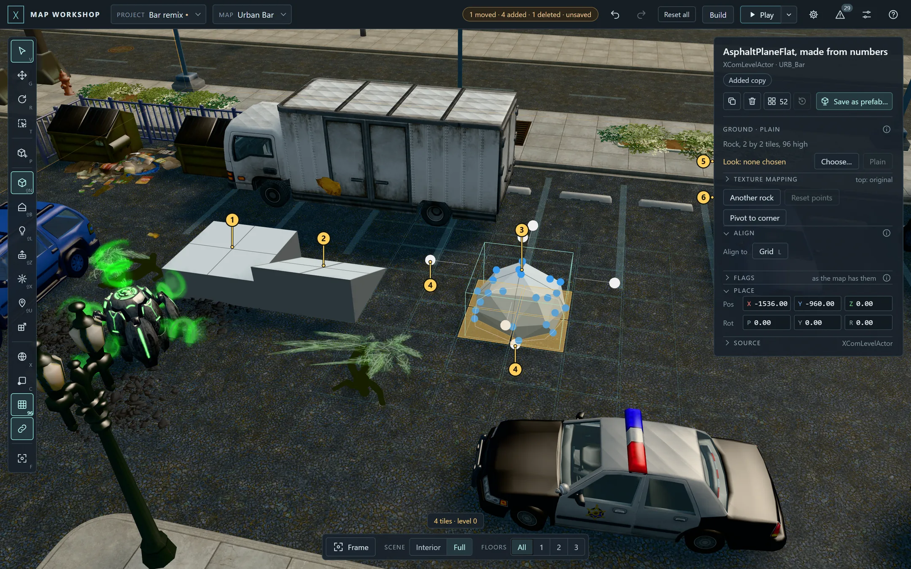
- A block: raised ground, walked on.
- A ramp: it rises toward where its drag ended. Its panel gives its slope in degrees and what that means in play.
- The picked rock, with a blue point on each of its corners.
- Its white handles: those on the sides size the shape, the one on top raises or lowers it (a patch has none on top), and the one under it moves its bottom, in the snap setting's steps.
- Look: any of the game's ground and rock materials. In the look picker each card shows this shape made in it. Under it, its Texture mapping, folded.
- Another rock gives a different rock in the same footprint and height; Reset points puts its corners back. A ramp has Turn here: a quarter turn on its footprint. Pivot to corner: sizing.
- A rock's blue points are its corners. Click one (it turns white) and drag the arrows that appear on it to move it; Shift gives steps of 8 and Esc lets it go. A point of the rock's foot stays on the ground. A point dragged past the footprint grows the rock by whole tiles. Each drag is one undo step.
- Slopes: a gentle ramp is walked and gives cover as flat ground does. On one steeper than about 10 degrees a unit gets no cover, as on every slope of the game's, and past 45 degrees there is no floor on it. The panel says which holds. A block or patch tipped by the gizmo is warned of the same way by the Build.
- A patch's top lies level with the ground it covers, a little over it, so it hides what is under it.
- Ground shapes don't break. A rock stands in the way and gives cover by its height, as the game's rocks do.
- A drag draws up to 64 tiles a side; the handles take a shape further.
Looks: the look picker
A look is the appearance of one of the game's own walls, floors, roofs or ground materials. A made piece given a look is made again in it where it stands; the Build brings what the look needs from its home map.
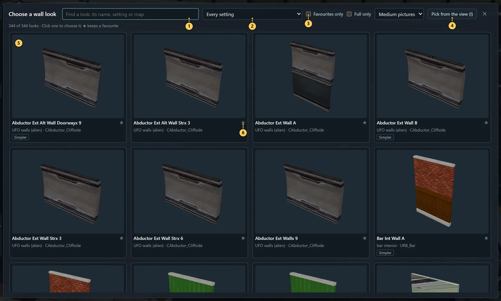
- Find a look by its name, its setting or a map.
- Setting: only the looks of one setting (a bar's interior, a UFO's walls).
- Favourites only, and beside it Full only, which hides the looks tagged Simpler.
- Pick from the view (I): then click a piece in the view to take its look. To its left, the size of the pictures.
- A card: a sample made in the look (a wall three tiles long, a floor three by three, or the ground shape being changed), its name, its setting and the map it comes from. Click it to choose it.
- The star keeps a favourite: starred looks come first.
- The order: the piece's own look first, ringed, then the looks the project uses, your favourites, then the rest by name. The arrow keys and Enter move and choose; Esc clears the find box, then closes.
- Tags: Simpler marks a look the Build makes simpler than the piece it is taken from (its tooltip says how). LWR marks a look only Long War Rebalance has: it builds on an install of Long War Rebalance.
- The pictures are drawn the first time the picker shows a kind, the cards in view first, which takes a few minutes for all of them. They are kept, so they show at once after that.
- A look chosen for a wall is given to the walls joined to it as well (a room's four), or to every wall picked. It is one undo step.
- While a Build menu tool draws, I picks a look from the view for what is drawn next.
Texture mapping: a pattern of your own size and turn
A made piece takes its look's texture as the look lays it. The Texture mapping fold, under the Look row of the Wall, Floor and Ground sections, lays it anew on one surface at a time: larger or smaller, turned, slid, mirrored, or lined up with the pieces beside it. Folded, its line says how the surface shown is mapped (faces: size 128, 15°).
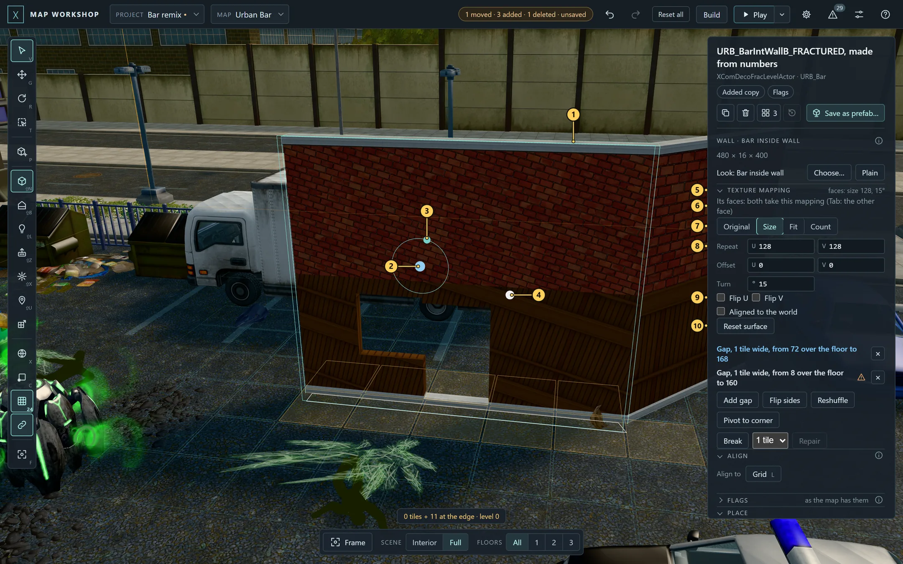
- The picked surface, outlined. A click on the piece picks the surface under the pointer, and Tab the next.
- The blue dot, at a corner of the pattern: drag it to slide the pattern over the surface.
- The ring round the dot: drag it round to turn the pattern about the dot.
- The white dot, a repeat along from the blue one: drag it to size a repeat, the other way in proportion.
- Texture mapping, open: click its name to fold it again.
- The surface shown, and what Tab picks next. A wall's two faces take one mapping.
- How it takes its texture: Original, as the look lays it; Size, a repeat of a set size in game units, so the pattern keeps its size as the piece grows; Fit, one repeat stretched over the whole surface; Count, a set number of repeats over the surface, as many after a resize.
- Repeat, Offset and Turn: a repeat's size along U and V (Count: how many), the pattern slid in repeats, and its turn in degrees, to type exactly.
- Flip U and Flip V mirror the pattern. Aligned to the world counts it from the map's origin rather than the piece's, so it lines up with the pieces beside it and stays put in the world when the piece moves.
- Reset surface takes the surface back to its look's own texture.
- The surfaces: a wall's faces, a floor's or roof's top and underside, a ground shape's top and sides. The trims, ends, edges and the insides of gaps keep their look's texture. A ground shape's sides take the fields only, with no handles.
- The handles move in the snap setting's steps: the blue dot across and up on a face (across both ways on a top), the ring in the snap's turns (15° at 24, quarter turns at 96), the white dot in steps along; all smoothly with snap off. Esc during a drag puts it back, and each drag or change of a field is one undo step.
- While the fold is open, the piece's size handles and the gizmo step aside, so the texture's handles are the only ones on it. They come back when the fold is folded or another piece is picked.
- A mapped ramp's top takes its pattern along its slope, so a repeat of 64 is 64 long up the slope.
- Notes under the modes say where a look makes a mapping act otherwise than it reads. Some looks draw a part of a larger texture (an atlas): mapped, the whole texture repeats there, its other parts with it. Some wall looks have no face on one side, only trims, so the mapping takes the other side alone. Where the look's material repeats its texture more than once in a repeat, a note gives the pattern's real size (the pattern shows every 96); where the editor can't read that, the Repeat row's tooltip says the pattern may repeat more often.
- The Build makes the pattern as mapped, in quick and baked builds alike.
Damage: Break and Repair
A piece can be built already broken, as the game's maps keep ruined walls. The Break row is in the Wall and Floor sections of made pieces, and in a Damage section on the map's own fracturing pieces: its walls, storey floors and roof slabs, where they stand, moved, or copied.
- Press Break (B), choose how far a blast reaches (1, 2 or 3 tiles), and click on the piece. Each click sets off a blast that knocks out the fragments within its reach. Esc stops, Ctrl+Z takes a blast back, and Repair mends the piece whole.
- In the game a broken wall goes on breaking like any wall. A hole in it is walked and shot through.
- A broken roof or floor stays as you broke it: the game keeps its own roofs and floors whole in battle, and the Build cuts your hole into it for good. Tick Breaks further in battle, which shows on such a piece once it is broken, to let explosions go on breaking it, as walls break.
- The blasts are saved, copied and pasted with the piece.
Cover blocks and invisible floors
Two pieces the game never draws, both under Kind: Invisible in the piece list. A cover block adds cover and blocks movement where the map has nothing to do it, as Long War's own map patches do (or, with Cover set to None, only blocks movement). An invisible floor is something to stand on where the map has no floor. Both work on plain Enemy Within too.

- A high cover block: full cover for a unit beside it, and it blocks sight.
- A low cover block: half cover, and units see over it.
- An invisible floor: a thin plate with its top at the height you place it at.
- Its handles: drag a white dot to move that face (four sides, the top and the bottom) and size the block.
- Cover: high, low, or none (a blocker), and under it what the block does to line of sight: a high block stops it as a wall does (a unit beside it can still lean round its ends), units see over low cover and through a blocker.
- Its size and what it will do where it stands, in words.
To place a cover block: press P, choose Kind: Invisible, pick Cover block and click its first tile; with snap at 96 it goes by whole tiles. It starts as one tile of high cover, one tile tall. Size it with its handles and set its cover in the piece panel. Turn it with R; with snap off, the turn handles can also tip it onto its side.
To size a block: select it and drag one of its white dots. Each moves one face along the block's own axes: its four sides, its top and its bottom. The face moves the distance dragged in the snap setting's steps, so a size off the steps keeps its offset:
- 96: whole tiles across, and levels of 64 up.
- 24: steps of 24 units.
- Off: smooth.
A drag on a low side (−X, −Y) moves the block's corner, so the far side stays where it is. Esc during the drag puts it back, and each drag is one undo step. A block can be 8 units to 16 tiles across, and its bottom can leave the floor.
A block smaller than a tile does what the game's tile rules make of it. The panel says which, for where it stands:
- One that fills the middle of a tile stops units standing in it.
- One across the line between two tiles' centres, 64 units over the floor, is a wall: units can't cross between those two tiles. A thin block along a tile edge does this, units stand on both sides of it, and both sides get its cover.
- The game looks for cover 44 to 60 units over the floor, along the lines through the tiles' centres. A block whose top is under 44, or one off those lines (in a tile's corner, say), gives none.
- One under 4 units through fills no tile, so on its own it gives no cover. It can still wall off a tile edge.
- Units can't walk through a block, and the units beside it get its cover. In the game you won't see it.
- Over a piece that can be destroyed, make the block break with it. A block alone is never destroyed, so a block over a car leaves an invisible wall when the car is gone. Group the block with the piece and tick Break together in the game: the block then goes when the piece is destroyed. One breakable piece is enough, and it can be one of the map's own, left where it stands.
- On a slope (a ramp, a hillside) the game gives no cover to a soldier standing on the sloped tiles, from a block or anything else: there a block only stops movement, and gives cover to soldiers on flat ground beside it.
To stop units walking somewhere without giving cover: place a cover block and set its Cover to None. It becomes a blocker (drawn purple): units can't walk into its tiles or stand on it, units beside it get no cover from it, and units see past it. It sizes, turns and breaks with a piece as any cover block.
To place an invisible floor: pick Invisible floor in the same list. Size it with its four side handles, as a block, and set its height with the Z field. It carries the tiles whose centres it covers, since the game looks for a tile's floor at its centre; the piece panel counts them.
- Units only get onto it from somewhere they can already reach at that height, or by a ladder. A ladder counts an invisible floor as floor for its foot or its top.
- Placed from the list, its top goes just above the ground at the centre of its tile, which is where the game looks for a floor. The ground there is the game's collision, which can stand a few units above the ground you see, so a floor may look raised. The piece panel says how high it stands there, and Fit to ground puts it back just above the ground.
- Over a ramp, a floor makes the tile flat, so a soldier on it gets cover. A floor gives no cover itself, so the tile below it on a ramp doesn't get cover from it as from a step.
- It does not break. In a group that breaks together, an invisible floor stays.
Prefabs
A prefab is a set of pieces saved to be placed again as one thing: a barricade, a market stall, or a whole building with its lights. Prefabs are kept in a library of their own, apart from maps and projects, so one can be placed in any map and passed on as a file. They are listed under Prefabs in the piece list.
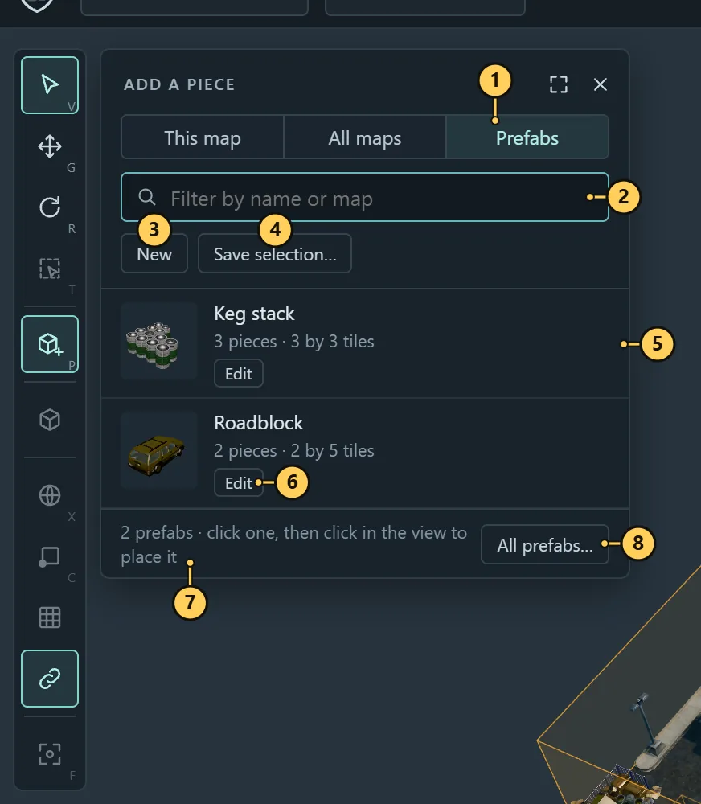
- Prefabs, beside This map and All maps.
- Filter by name, or by the name of a map its pieces come from.
- New opens an empty prefab builder.
- Save selection… saves what is selected in the view as a new prefab.
- Import… adds a prefab file someone passed on.
- A prefab: its picture, name, what it holds and the tiles it covers. Click it to place it.
- Edit, Rename, Duplicate, Export and Delete.
- How many prefabs the library holds. Hover it to see the folder they are kept in.
To save one: select what should be in it, then press Save as prefab… at the top of the piece panel (or Save selection… here) and give it a name. Box select takes a whole building at once; with the Normal view's switches on it takes the lights and the building's floor boxes too. The window says what goes in, and lists anything that can't. While it saves, a bar counts the pieces copied to the library (the first save of a map's pieces takes a while).
- What goes in: the map's own pieces and the ones you added (pieces from other maps too), cover blocks and invisible floors, lights, effects, sounds and lens flares (with their values), the groups among them, and buildings: your own, or the map's own, each saved as a building of the prefab.
- Lights are saved with all their values, so the prefab needs no light to copy from in the map it is placed in. A light's finer settings that the light panel doesn't show go back to the usual ones.
- Left out: pieces of the levels a mission streams in (they aren't the map's own).
- A name the library already has turns Save into Replace: the prefab is saved over the old one. What you placed from the old one stays as it is.
- Saving changes nothing in the map or the project.
To place one: click it in the list, then click in the view. R turns it a quarter turn before you click; Shift+click places it and keeps going. It arrives as one group, named after the prefab in the piece panel: it selects, moves, copies and deletes as one. Ungroup it to change single pieces; the groups it had inside stay groups. Placing is one undo step.
- What you place is a copy. Changing or deleting the prefab later changes nothing already placed, and a project doesn't need the prefab's file.
- A prefab with a building in it is placed by whole tiles, whole levels and quarter turns, whatever Snap says, so its floor boxes stay on the tile grid. Any other prefab is placed as a piece is, in the snap setting's steps. A door, ladder, car, van or wall in it that lands off its grid builds with a warning, and Game pose in the Align section moves the prefab so that it stands on it.
- In another map, its pieces are brought from their home maps, as pieces from other maps are. The first time, the editor reads them from the game, which takes a moment for a large prefab. A piece that can't be brought into another map is left out, and the message says which.
- Maps missing on a row means this game install lacks a source map. The editor looks for matching recipes when you place the prefab and warns about any pieces it leaves out.
- A building in a prefab placed where it overlaps another building builds, with a warning: a piece in both is listed by both.
- Lighting is as for pieces from other maps: build with Bake the lighting to light the prefab for where it stands.
Passing one on. Export saves the prefab as a small .json file. It holds the
names of the pieces, where they stand and any saved recipe keys. The recipient needs game maps with those pieces.
Import… adds such a file to your library. If the library already has
that prefab, the editor asks: Replace it saves the file over yours, Keep both
adds it beside yours with "(imported)" after its name. Delete moves a prefab's file to the
library's .workshop\deleted folder instead of erasing it.
The prefab builder
New in the Prefabs tab opens an empty workspace in the main editor. A row's Edit opens that prefab for editing, including imported prefabs and ones saved from a map selection. The map browser (M) also has a Prefabs group.
Add pieces from All maps, or place another prefab and use Ungroup to edit its pieces. Choose Lights for point and spot lights, or Invisible for cover blocks and invisible floors. The Build menu on the Add button draws walls, rooms, floors, roofs and ground as in a map, and the prefab keeps them. The Buildings, Lights and Effects views, box select, nested groups, copy, paste and undo work as in a map, and a prefab's effects are drawn as they look. The ground grid grows with your work; it is a drawing guide and is never saved. Negative X and Y are fine.
In the builder the header's Project button reads Prefab, and its menu is the prefab's. Prefab → Save (Ctrl+S) saves everything, including lights and floor boxes hidden by the current view. Floor boxes alone can be saved. The first save asks for a name; later saves write the next revision. Save as… makes another prefab, or explicitly replaces a different one after confirmation, leaving the original unchanged. To update the one being edited, use Save.
The footprint and height appear at the bottom. Height 0 is the drawn grid. A map holds at most 256 by 256 tiles, and a tile grid 0 to 1,920 units high (30 levels), with up to 192 units sticking out under or over it: a hull or crater under the ground, a roof, floor boxes, lights. Out of the grid there are no tiles, so nothing there can be stood on or give cover; the readout says when something sticks out. Light influence radii do not count. The usual cursor storeys are guides; floor boxes can have other heights. A prefab larger than a map holds is saved and placed all the same, with a warning on the readout and on its card. Nothing is lifted automatically. A selection saved from a map keeps its height: the map's grid bottom becomes 0. A prefab placed where it reaches outside the map's grid is placed, with a notice saying how far it reaches out.
Under the readout, a Problems chip says what Test in game would say of the prefab as it stands, without building it: how many pieces would be left out and how many warnings there are. Click it for the list; a row selects its piece. It is checked when you open and save the prefab, and Check again brings it up to date after an edit.
The test stage's ground is hidden: it is still there to stand on, so what reaches under it shows, and the game draws its own tile grid under the cursor. A noon sky surrounds the stage, above and below. A test battle has no aliens.
Doors, ladders, cars, vans and fracturing pieces are meant to stand whole tiles and levels from where their originals stand. When one is off that grid, a warning over the size names it; it still builds and tests, but what the map saved for its tiles no longer fits exactly. Show selects it; Align prefab to grid moves the whole prefab, lights and floor boxes too, the smallest distance that puts every such piece on the grid, in one undo step. Move it by whole levels afterwards to set its height: it stays aligned.
When you open a prefab with missing pieces, the builder looks for the same recipes in your local map catalogue and warns about pieces it still can't load. Matches keep their positions and links. You can undo the recovery or save the prefab with its new sources. Unresolved records stay in the document. After scanning or rescanning All maps, use Prefab → Find missing pieces to try again. Unsaved changes to an already saved prefab are kept for recovery and offered when you reopen it. Opening a map, project or prefab asks Save, Discard or Cancel first if there are changes. A failed or cancelled save keeps the current workspace open.
Glowing props, such as neon signs and lamps, carry their matched area lights when you move or copy them in a prefab. Quick builds keep those lights live, and baking adds their glow to nearby static surfaces.
Testing a prefab in game
In the builder, Test in game… stands in the header where Play does in a map. Its dialog shows the prefab's dimensions and the game install that will open. Build and test uses the current contents, including unsaved edits or a prefab you haven't named. Bake the lighting is off by default, for a quicker check of appearance, movement, cover or cutaway; the stage has a neutral fill light either way. Tick it to see the prefab's shadows and the glow of its lights on nearby surfaces. Its effects and sounds play in the test, each read from the map it was saved from.
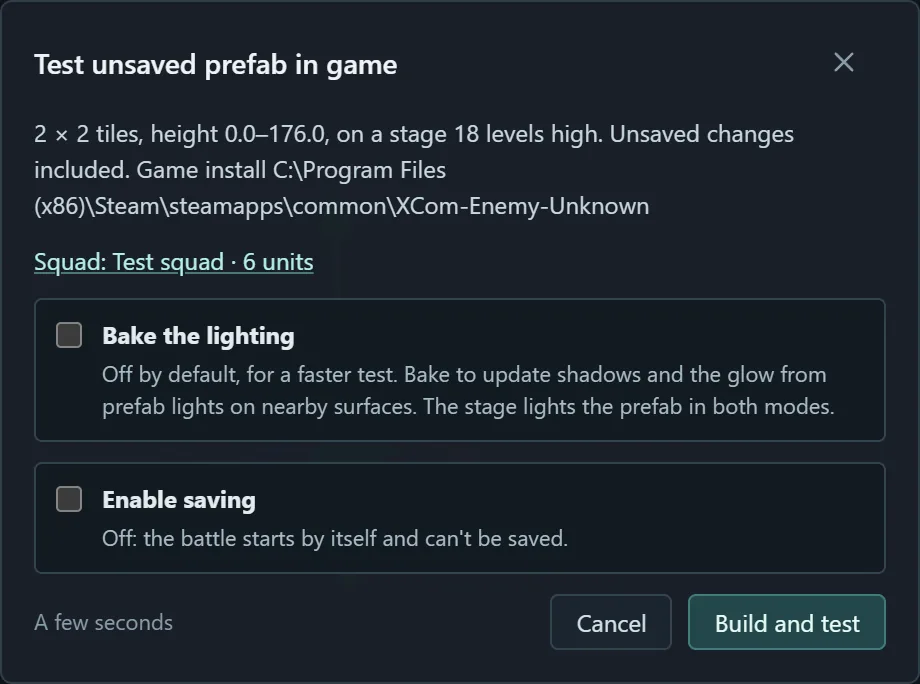
The battle starts on the blank stage with the prefab placed beside the squad. If the entire footprint leaves no room for the squad, or the editor can't resolve all the pieces, the progress window shows the problem. You can cancel preparation or building there. If you reload before the build launches, reopen the test and choose Launch test when it is ready. Close XCOM when you finish to restore the test install.
The map
What belongs to the map as a whole: its lights and effects, its buildings, its size, where the squad and the aliens start, its diagonal cover, the missions it serves and the picture the game shows for it.
Lights
The map's placed lights can be edited as pieces are. The Lights view (its row in the tool strip's Views list, or Shift+L) shows them as markers: a bulb for a point light, a cone for a spot light, each in its light's colour. Grey markers are view only, hollow ones are switched off. While the view is on only lights can be selected, so a piece is never moved by accident; a light that is in a group moves on its own here. To handle lights together with pieces, use the Normal view's Lights switch instead.
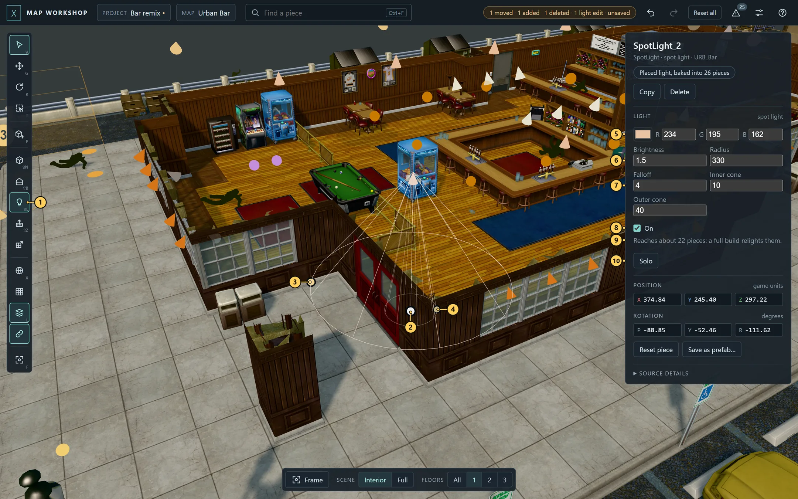
- The Views button shows the Lights view's bulb while it is on. Click a marker to select its light. Move, turn, copy and delete it as you would a piece.
- Radius handle: drag the white dot to change how far the light reaches.
- Outer cone handle (spot lights): drag the dot on the left of the rim. Nothing is lit outside this cone.
- Inner cone handle: the smaller dot on the right. Inside this cone the light is at full brightness.
- Colour: the picker, or red, green and blue from 0 to 255.
- Brightness (0 to 100) and Radius in game units.
- Falloff (how fast it fades towards its radius: higher stays bright for longer, then drops) and, for a spot light, the inner and outer cones in degrees.
- On: unticked, the light stays in the map but lights nothing.
- What it lights: how many pieces the light is baked into, or reaches now that you changed it. A baked build relights those.
- Solo (O) dims the map and lights it with the selected lights alone, to see what they do.
- A typed value applies on Enter; Esc puts it back.
- New lights are in the piece list: Add, then Kind: Lights. Point Light and Spot Light are placed as pieces are. Each starts as a copy of one of the map's lights of that kind; on a map with none, the editor makes its own.
- To see your light edits on the map itself, choose Map lighting in View options.
- Two switches stand under the Lights row of the Views list while the view is on: Area lights also shows the lights that stand for glowing surfaces (view only), and Outline the pieces a light reaches outlines, for the selected light, in teal the pieces it is baked into, in orange the ones it reaches after your change.
- Glowing pieces (a lit sign, a screen) carry their glow with them. Sometimes the editor can't tell which piece a glow belongs to; its panel then says "May glow". Before moving such a piece, select the glow's light and choose Assign glowing piece (then click the piece) or Keep fixed.
- A view-only light's panel says why it can't be edited.
Effects and sounds
A map's effects are its particle systems: fires, smoke, steam, dripping water, blowing trash, moths round a lamp, a Skyranger's lights. Its sounds are the ambient sounds placed in it: a car's idle engine, a humming machine, wind. Its lens flares are the glints round some lamps. The Effects view (its row in the tool strip's Views list, or Shift+X) shows all three as markers drawn over everything, and they are edited there as pieces are. While the view is on only they can be selected, so a piece is never moved by accident; to handle them together with pieces, use the Normal view's Effects and sounds switch.
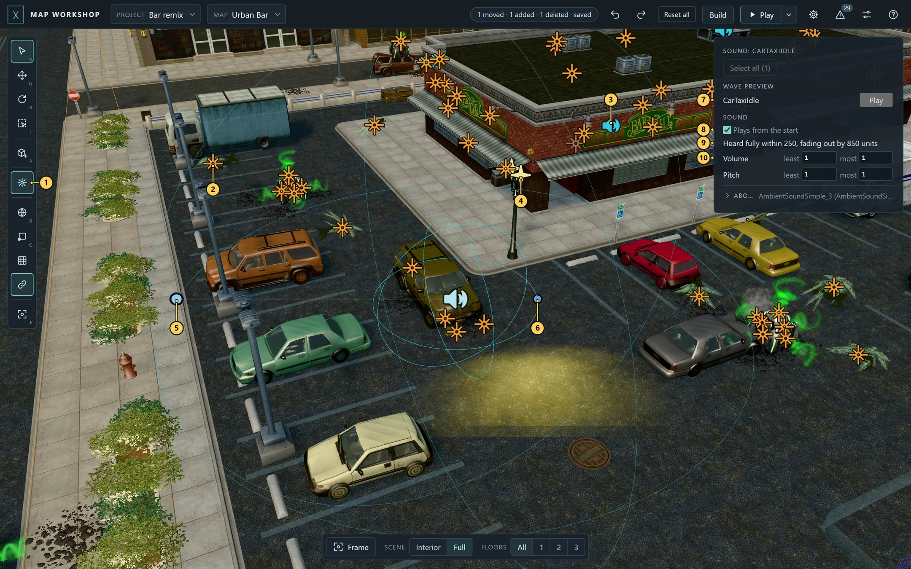
- The Views button shows the Effects view's spark while it is on. Click a marker to select what it stands for.
- An effect is a spark (here a body's webbing).
- A sound is a speaker.
- A lens flare is a star (here on a street lamp).
- The outer sphere's handle: drag it to set how far away the sound fades out to nothing.
- The inner sphere's handle: within this sphere it is heard at full volume.
- Wave preview: Play plays each of the sound's waves, one at a time.
- Plays from the start: unticked, the sound stays in the map but is silent until the map's script starts it.
- Its reach in words, as the two handles set it.
- Volume and Pitch: the game picks each between its least and its most.
- The markers: a hollow one starts switched off (the map's script turns it on). A greyed one belongs to a level a mission streams in, and is view only, or is the effect a copied piece carries, which goes with that copy.
- Click a marker to select it. The panel says what it plays, whether it starts with the mission, and chips with what you should know: named by the mission's script, carried by a piece, part of the landing, hidden with a building's floor, placed by a prefab, riding on another actor. A picked effect shows its box; a picked sound, its two spheres. F or a double-click brings the camera to it.
- Edit it as a piece: the gizmo moves and turns it, Ctrl+C and Ctrl+V copy it, Del deletes it, Reset piece puts it back, and it groups with pieces (Ctrl+G). Each is one undo step. One the editor can't change (a streamed level's, one riding on a dropship) says why when you try.
- Select all in its panel selects every effect of the same particle system, or every sound of the same waves, or every lens flare of the same kind; with a box drawn, those inside it. Box select in this view takes markers only.
- The mission's script: an effect or sound the script names can be moved, copied and deleted, but the script goes on acting on the original. The Build warns of it.
- The landing's effects (a Skyranger's lights and engine) follow their landing zone when it moves.
- Building floors: an effect inside a building hides with its floor, as a piece does. The Build lists a moved or copied effect on the floors whose boxes hold it.
- A build of effects alone needs no baked lighting: a quick build makes them.
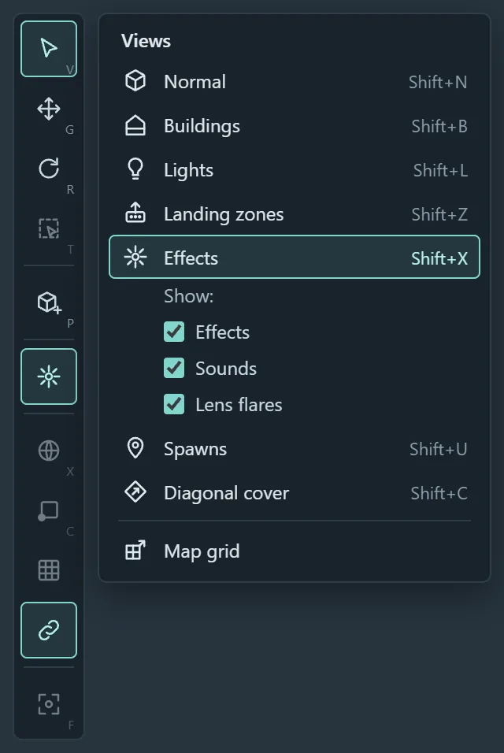
While the Effects view is on, its row in the Views list has a switch for each kind: untick Effects, Sounds or Lens flares to hide its markers while you work on the others.
An effect's values
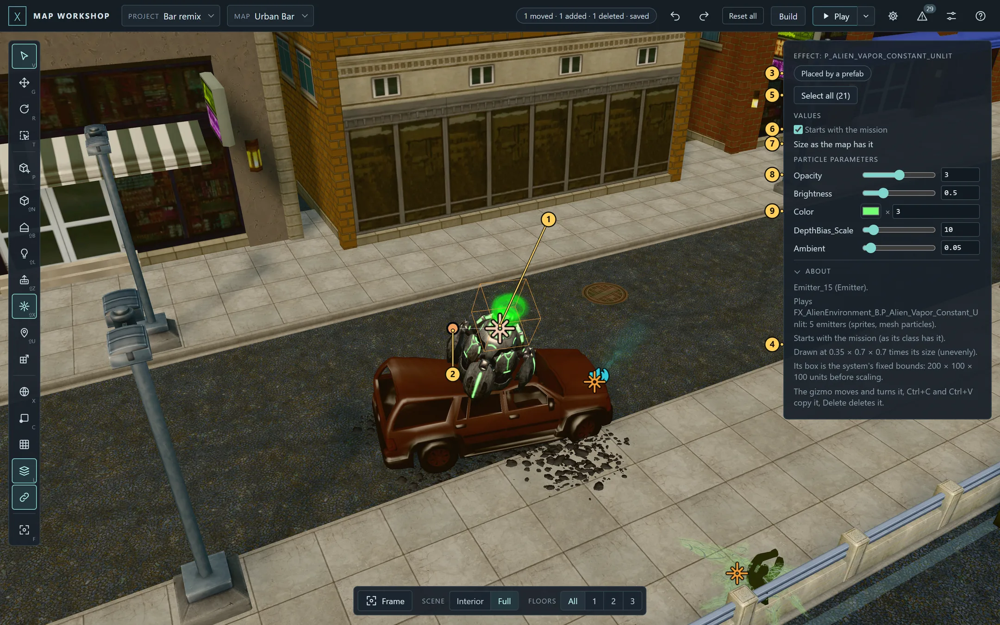
- The picked effect: its marker and its box, drawn round the smoke.
- The size handle: drag it to make the effect larger or smaller, from 1/64 to 64 times its size in the map. The box and the drawing follow.
- Its chips, here Placed by a prefab.
- About: what it plays (its particle system and emitters), how it starts, its size and its box. Folded, the line says the first of these.
- Select all of its particle system: 21 of these on the Bar.
- Starts with the mission: unticked, the effect is in the map but switched off until the map's script turns it on.
- Its size against the map's, as the handle sets it.
- A particle parameter: a number, with a slider guided by the particle system's own range.
- A colour parameter: the colour, and its strength beside it. The maps' own often go past 1.
- The particle parameters are the settings a particle system takes from the map: an opacity, a brightness, a colour, a size. The panel lists the ones the effect saves, then the ones its system offers that it doesn't save. A vector shows its three parts, labelled r, g and b where they colour the particles. One saved as a random value, or read two ways, stays as the map has it, and its row says why.
- Each change is one undo step. ↺ beside a value puts that one back; Reset piece and Reset all put them all back. A copy takes the values of what it copies.
- A sound's values are its two spheres (dragged in the view as an effect's size is), Plays from the start, and Volume and Pitch. A sound whose cue other sounds share shows its values read only.
- The Wave preview plays each wave by itself at a preview volume, without the game's reach, volume, pitch, random choice or looping. Stop, picking something else, Esc or leaving the view stops it.
Effects a piece carries
An effect that stands on a piece, such as a claw machine's lights or an alien vapour pod's smoke, is carried by it: the piece's panel has a Carries an effect chip. Moved, copied or deleted, the piece takes its effects along, each keeping its place and turn on the piece; a copy's are drawn greyed. Move the effect by itself and it is its own from then on. A carried effect's panel has Keep where it is, which leaves it where the map has it while the piece moves, and Follow, which lets it follow again.
Lens flares
A lens flare moves, turns, copies, deletes and groups as an effect does, and box select and Select all take it. It has no values: its look and colour stay as the map has them. One that rides on a dropship stays view only.
Effects from other maps
The piece list's All maps lists the other maps' effects, sounds and lens flares beside their pieces. The Kind menu has Effects (with its kinds: Fire, Smoke and steam, Water, Light beams and glows, Nature, Alien, Wreckage and trash), Sounds (Machines, Engines, Nature and weather, Alien, Music and voices) and Lens flares. An effect placed the same way in several maps is one entry.
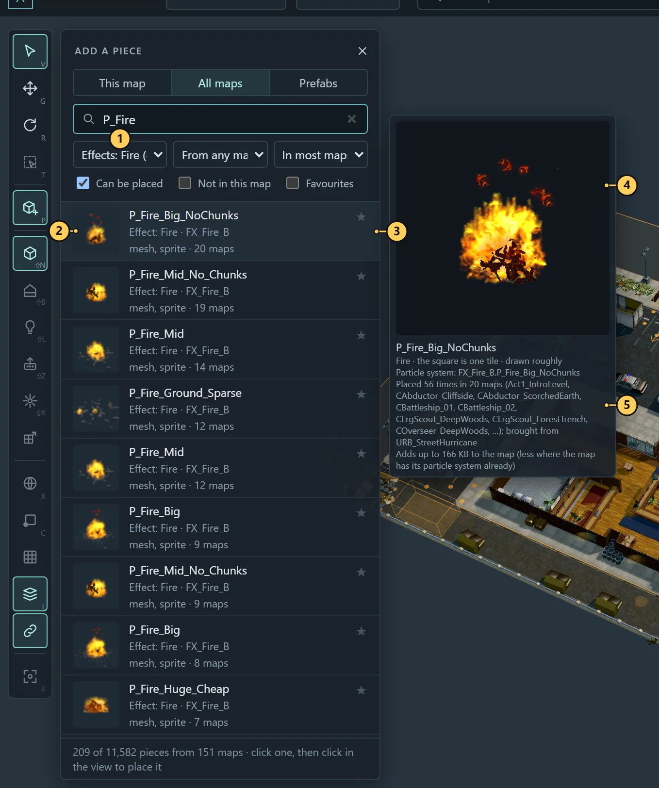
- Kind: here Effects: Fire.
- Its picture: the effect as it looks. A sound shows its speaker.
- An entry: its name, kind and particle system, what its emitters draw, and in how many maps it stands. Starts off marks one that waits for its map's script.
- The pointer on an entry plays it in a pane beside the list, turning slowly over a square one tile across, for size.
- What it is: where it is placed, the map it is brought from, and how much it adds to the map.
- To place one: click it, then click in the view, as a piece; while you place it, the effect plays at the cursor. Its panel says which map it comes from, and a sound's Wave preview plays its waves from there.
- The Build brings it into your map with what it needs, its particle system or its waves, and its values are edited as the map's own.
- Not brought: a landing's effects, one riding on another actor, and one that plays nothing are listed but can't be placed; untick Can be placed to see them, each with why.
Effects as they look
Every effect is drawn where it stands, moving, from its particle system's own textures, colours, sizes and timing, in every view: a fire flickers, steam rises, moths circle. It is a likeness, not the game's picture: scrolling and rippling textures, lit particles, swirls and bounces, and one emitter setting off another are left out, and the panel says what a picked effect's drawing leaves out. The game is the judge of how an effect looks.
- An effect that starts switched off is drawn only while it is picked.
- The drawing is never clicked: its marker is what you pick.
- Untick Effects as they look in View options for a busy map on a slow computer: the markers and the editing stay.
Buildings
To the game, a building is not its walls and roof. It is a set of invisible boxes laid over them, one or more for each floor. The boxes tell the game which pieces belong to which floor, and that is what lets you see inside:
- The roof and the upper floors hide when a soldier is inside, or when the cursor is.
- The walls cut down to low stubs, so the near wall doesn't block the view of the room.
The game's own maps have these boxes already. A piece you bring from another map comes without its building, and a house you put together from walls and a roof never had one. The Buildings view is where you give it one.
Without boxes
Pieces with no building around them are loose scenery. They stand, give cover, block sight and break as always, and soldiers walk in and climb as on any floor. What is missing is everything above: the roof never hides, an upper floor and its furniture stay drawn while you look at the ground floor, the walls stay at full height, and moving the cursor inside opens nothing up. A closed building without boxes can be played, but blind: the fight inside happens under a roof you can't see through. Fences, walls and ruins with no roof need no boxes.
The Buildings view
Buildings in the tool strip's Views list (Shift+B) turns the view on and off. While it is on, only boxes can be selected: a click on a wall picks the box around it, never the wall, so nothing of the building is moved by accident. Every building's boxes show in their floor's colour, the map's own as yours (The map's own buildings); only the few that stay as the map has them are grey.
Drawing a box
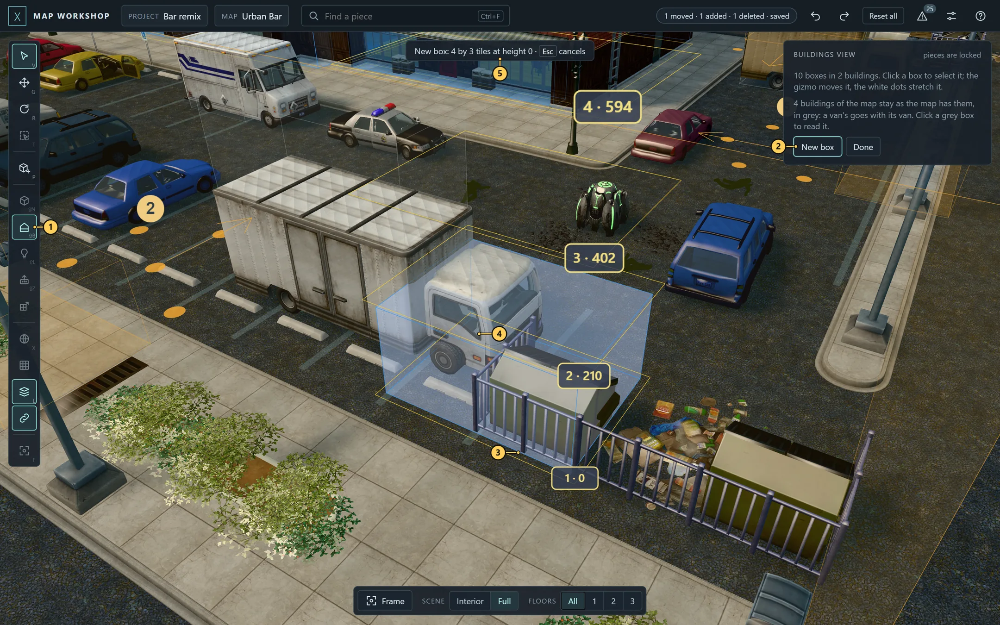
- The Views button shows the Buildings view's icon while it is on. The panel on the right appears, and pieces can no longer be selected.
- New box (N) arms the tool: the cursor becomes a cross.
- Press where one corner of the floor is…
- …and drag to the opposite corner. The box follows by whole tiles and stays see-through, so you can see what it takes in.
- The line at the top says its size in tiles and the height it starts at. Esc cancels.
Let go and the box is made, one storey (192 units) high, and selected. It starts at the level under the cursor: on the ground here, on a floor if you start the drag on one. With a floor chosen in the Floors buttons it starts at that floor's height. It joins the building of the box you selected last; with none, it starts a new building.
Fitting a box and making the next floor
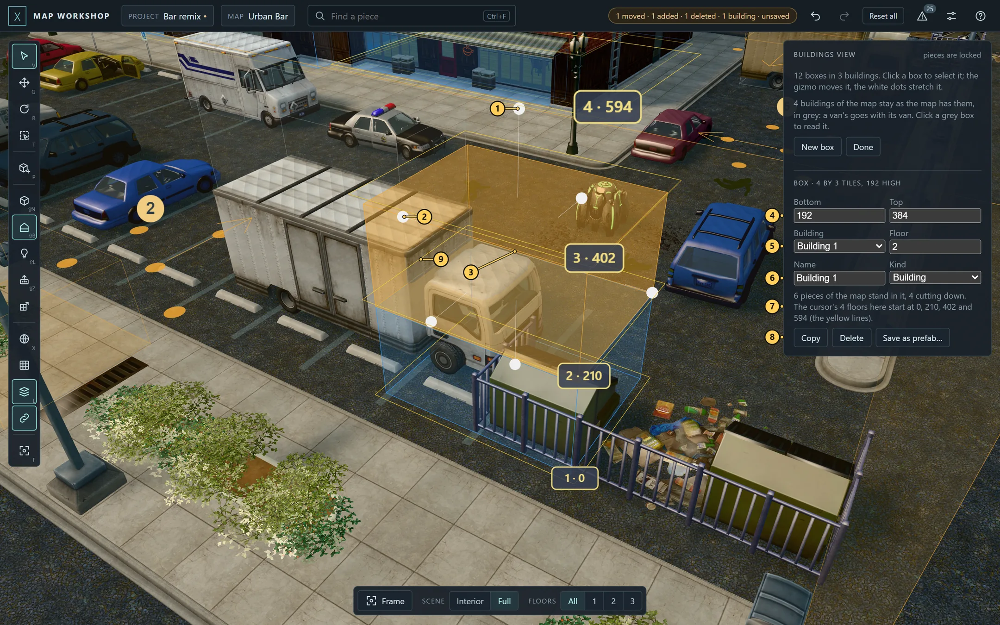
- The top's handle: drag a white dot to stretch that face. The top and the bottom go to levels.
- A side's handle: a side goes to the tile lines. Hold Alt for steps of 8 units. Each dot stands off its face on a thin line, clear of the arrows.
- The Move tool's arrows move the whole box, by whole tiles and levels. A box is never turned.
- Bottom and Top: the heights the box runs between. They can be typed.
- Building and Floor: which building the box is a part of, and which of its floors (1 is the ground floor). New building in the list starts another.
- Name and Kind are the building's: a name for you, and whether it is a plain building or a UFO. What Kind changes
- What it takes in: how many pieces stand in the box, and how many of them cut down. Anything the Build would refuse is said here too.
- Copy and Delete (Ctrl+C, Del).
- A yellow line: where one of the cursor's floors starts over the box, with that floor's number and height. A storey's box should start at one. The cursor's floors
To add a floor above, select a box, copy it and paste (Ctrl+C, Ctrl+V): the copy lands on top of the original as the next floor of the same building, as in the picture. Then drag its top to where the roof ends. Move it from there if it belongs elsewhere.
- Boxes around the pieces selected: select a building's walls, floors and roof first, then turn the view on. The button makes a box for each floor around them.
- Undo and redo (Ctrl+Z, Ctrl+Y) work on boxes as on pieces.
- Several boxes can be selected with Ctrl or Shift+click; Building and Floor then set them all.
- A floor of any outline is several boxes with the same Building and Floor: two for an L-shaped house. Why not one big box
- The map's own buildings are edited the same way: see below. Grey boxes, a van's building among them, can be clicked and read, not changed.
- Done, or Shift+B again, leaves the view: pieces can be selected again.
With the view off, the Floors buttons cut your building down as they do the map's own, so you can check it: choose floor 1 and the roof should go and the walls drop.
Kind: Building or UFO
Leave Kind at Building for anything that is not the mission's alien ship: a house, a shed, a shop, and also a ship-shaped structure you only want as scenery.
What you see is the same for both kinds. A UFO's hull hides its roof and upper decks and cuts its walls down exactly as a house does, with the same boxes and the same rule.
UFO sets one mark on the building, the one the game's own crashed and landed ships carry. The only part of the game that reads it is the placing of the aliens at the start of a battle:
- the building's footprint is taken as where the ship is (for three of the ship types, a smaller area in its middle);
- groups of aliens can then be placed by it: inside the ship, or behind it as seen from where the squad lands.
So choose UFO only for the building that is the alien ship of a UFO mission, where the aliens should gather in and around it. On any other building the mark does no good, and it may put a mission's aliens around the wrong building.
A UFO building is also what lets Missions… give the map a crashed or landed UFO mission: under Long War Rebalance, the commander's pod is put in it. A UFO prefab brings the ship's own pieces with it; a building you draw yourself is only the boxes.
Where a floor's box goes
Each floor's box starts at that storey's walking level and runs up to where the next storey's walking level begins. The boxes stack: the top of one is the bottom of the next. The reason is the game's rule for which floor a piece belongs to: a piece counts for a floor when it touches that floor's box and its bottom is more than 20 units under the box's top.
| Part of the box | Where to put it, and why |
|---|---|
| Bottom | At the walking level of the storey. The floor you stand on, and everything standing on it, is then in that storey's box. |
| Top | Just under whatever should hide: the roof, or the next storey's floor. That piece must start no lower than 20 units under the box's top, or it also counts for the floor below and stays drawn when you look inside. |
| Sides | On the lines the walls stand on, so the walls are inside. |
| The top storey | It needs a box too, tall enough to take in the roof. A roof with no box around it never hides. |
- Walls should cross from one box into the next. A wall that starts in the lower box and rises into the upper one is the kind that cuts down. A wall that stops short of the upper box is a ground-floor piece and stays at full height. Most wall pieces are made to cut down; a tall piece that isn't simply stays drawn until every floor it reaches is hidden.
- All the floors of one building must have the same Building. The game hides and cuts down floor by floor within one building: "the floors above the one the soldier is on". Two boxes stacked as two separate buildings are two one-floor buildings, each with only a ground floor: nothing is above anything, so the roof never hides and the walls never cut down. The Build does not refuse this (the boxes only touch), so check the Building and Floor of each box in the panel, and check the result with the Floors buttons.
- You need not be exact to the unit. The game's own maps have storeys with a small gap between their boxes, and others that overlap by a unit, and they work. The 20 units at the top are what decides where a roof or an upstairs floor lands.
- The ground under the building is listed on floor 1 with everything else that touches the box. That does no harm: the ground floor is never the one hidden.
- A few plain scenery pieces (the class StaticMeshActor) never hide in the game, whatever box they stand in.
The cursor's floors: the yellow lines
The game keeps a second set of invisible boxes, apart from any building: the map's cursor volumes. They say which floor a height is to the cursor, and so where the mouse wheel stops as you go up and down. Your floor boxes decide what is hidden; the cursor volumes decide where the cursor goes. The two have to agree, or the wheel and the cutaway fall out of step.
How the cursor's floors work in a battle: each cursor volume carries a floor number. Rolling the mouse wheel moves the cursor to the next number up or down among the volumes over where it stands, and a click on a deck counts as the floor of the volume that height falls in. A place with no cursor volume over it has a single floor.
In the Buildings view, each of your boxes has a yellow line round it at every height where a cursor floor starts over it. On the selected box each line carries the cursor floor's number and its height (2 · 192).
- Start each storey's box at a yellow line, or within 32 units of one. The panel says so when a box starts away from them, and the Build warns of it.
- A top or bottom dragged near a yellow line goes to it, also where the line is off the levels: on the Bar the second cursor floor starts at 210.
- The game's own maps have theirs, often four over the whole map, sometimes many small ones over single buildings. They are shown as they are and not changed.
- A map made from nothing has none. The Build gives it four over the whole map, 192 units each from the ground up: the lines at 0, 192, 384 and 576. So build in storeys of 192 there.
A map opened before this was added prepares again the first time it is opened: the cursor volumes are read with the rest of the map.
A building with its pieces: Floor boxes in the normal view
In the Buildings view only boxes can be selected. To handle a building together with its pieces, open the tool strip's Views list and tick Floor boxes under Normal: your buildings' boxes are then drawn in the normal view as well. It is off whenever a map opens.
- Click a box's edge to select its building. The sides are see-through to the mouse, so the pieces inside are still clicked as usual. Ctrl or Shift+click adds it to the pieces selected, and Box select takes it with them.
- A building is picked whole here: all its boxes, on every floor. Single boxes are the Buildings view's.
- It moves by whole tiles and levels, and turns by quarter turns, and so does everything selected with it.
- Copy and paste (with at least one piece selected too) make a new building with the same floors beside the copied pieces. Delete removes the building's boxes; the pieces stay unless they are selected too.
- The panel shows the building's name and kind, which can be changed. Stretching a box and changing its floor stay in the Buildings view.
- To keep them together for good, group the pieces and the building.
The map's own buildings
The map's own buildings are edited exactly as yours are. Their boxes show in their floors' colours; in the Buildings view each box can be moved, stretched, copied, pasted (a copy on top adds a floor) and deleted, and a box can be added to them; in the normal view, with Floor boxes on, a building is picked whole with its pieces, to move, turn, copy or delete, and it can be in a group.
- Only what you change is saved. A building you leave alone stays exactly as the map has it. One you change is edited in place by the Build: the map's own floor volumes are moved and stretched, new boxes added, the ones you deleted taken out, and a building you delete is taken out with its boxes (its pieces stay).
- Where nothing changed, the cutaway stays as the map's designers made it. For each piece the Build works out the rule (where it stands in the boxes) before and after your change; where the answer is the same, the piece keeps what the map saved, lists tuned by hand included, and a floor added below carries the ones above with it. A building moved whole with its pieces keeps all of its own. The piece panel's Floors line shows what the Build will list.
- Restore the map's puts a changed building back as the map has it, as one undo step: its button shows under a changed building's boxes, and the Buildings view lists every building of the map you changed or deleted, each with Restore (a deleted one has no box left to click). Reset all restores them too.
- Notched boxes: some of the map's floor volumes are not plain boxes but have notches or an L shape (the Bar's ground floor has several); the editor draws their outer box, and the panel says so. Moved, such a volume keeps its shape; stretched, the Build puts a plain box in its place, filling the notches.
- Grey boxes are the buildings that stay as the map has them: a van's own building (it goes with the van), and the rare one with a floor that has no box. They can be clicked and read; selected with their pieces and copied, the copy gets a building of your own with the same boxes.
- A copy of one of the map's buildings is a new building of yours with the same boxes, named after the original; saved into a prefab, likewise. A copied alien ship is a plain building until you set its Kind to UFO in the panel.
- Lights, effects and sounds move with a building only when they are selected with it, as with any move (an effect a piece carries goes with its piece). Decals stay where they are.
Several boxes, or one big box
A floor that is not a rectangle (an L, a T, a house with a porch) is made of several boxes with the same Building and Floor. One larger box around the whole of it also builds, but the space it takes in beside the building counts as the building too:
- Everything in the box is part of that floor. A car, a tree, a lamp post or a neighbour's wall inside an upper floor's box hides along with the roof whenever someone is inside your building.
- Standing in the box counts as being inside. The roof would go while a soldier only stands in the yard beside the house: that is how the game reads the boxes.
- Boxes of two buildings had better not overlap. It builds, with a warning: a piece in both is listed by both, so a generous box can make the building next door hide with yours.
So keep each box to the walls. A box that sticks out by part of a tile where nothing stands does no harm, and the ground floor is the forgiving one: it is never hidden, so extra pieces listed there change nothing you see. The panel's count of pieces in the box is a quick check: if it jumps when you stretch a side, the box has taken in something that is not the building's.
An example: a hut whose walls run from the ground to 256 and whose roof starts at 240. Floor 1's box from 0 to 176, floor 2's from 176 to 384. The walls reach into both, so they cut down; the roof starts well above 156 (20 under floor 1's top), so it is floor 2's alone and hides.
Map grid
The map's tile grid is the box the game plays in: the play area. Map grid, the last row of the tool strip's Views list (or in the Map menu), shows the play area with a handle on each side that can move. Drag a handle to resize the grid. Click the row again, or press Esc, to put the handles away.
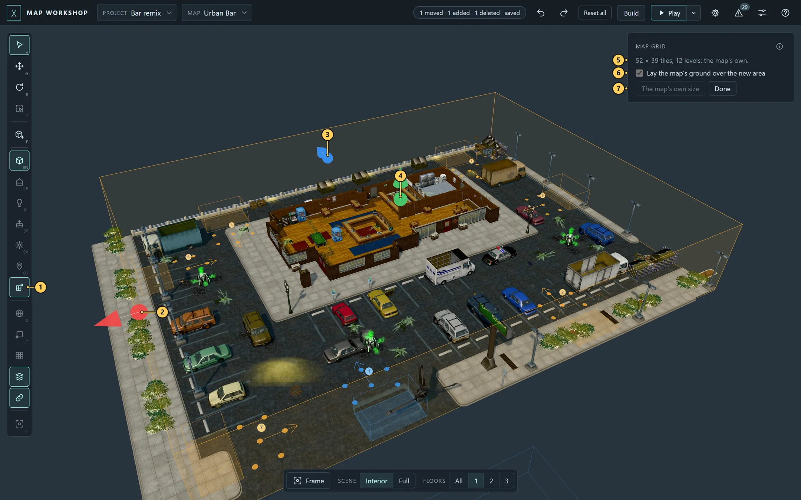
- Map grid in the Views list, here kept open by a click on the Views button.
- The red handle moves the far X side, by whole tiles.
- The blue handle moves the far Y side, by whole tiles.
- The green handle raises the top, by whole levels.
- The size, against the map's own.
- Lay the map's ground over the new area, shown on maps whose ground is laid as planes.
- The map's own size puts it back; Done puts the handles away.
- On a map as it is, the grid only grows. The red handle moves the far X side and the blue one the far Y
side, by whole tiles, up to 256 a side; the green one on top raises it by whole levels, up to 30. The corner and the bottom stay
where they are. The new area is drawn as a faint sheet:
- green where the Build lays more of the map's ground there, on maps whose ground is laid as planes (the blank map's and Bar's are);
- grey where it lays none. Lay the map's ground over the new area, in the panel, chooses between the two.
- The map's scenery in the new area is made walkable. The ground and pavements a map is seen against beyond its play area are saved so the game ignores them: no floor. The Build turns that on for the low ones the grown grid takes in, so units walk on them as on the map's own ground, at whatever height they stand (the Farm's raised fields too). The map's ground is laid only where no such piece is. Taller scenery (the backdrop's buildings, a hill's mesh) stays as it is: no floor, no cover. Lay floors where there is none. A copy of such a ground piece placed in the grid is floor too.
- On a cleared map the grid can also shrink and get lower. The corner and the bottom stay where they are.
- Every drag is one undo step. The panel gives the size against the map's own and warns about landing zones the grid leaves out. The map's own size puts it back.
Clear map and landing zones
Clear map… in the Map menu takes every piece off the map, the ground too, so that you can build a new map with pieces and prefabs on an old map's light and landing. It is meant for an unchanged map, but it works on any.

- A window comes first. It warns what will go and counts it for this map: the pieces, the lights, the
spawn points, the effects and ambient sounds, and the pieces the mission's script names. It also counts what
stays:
- the landing's own pieces (the drop zone's frame and the grounded Skyranger), with the Skyranger's lights, dust and sound;
- one landing zone: the map's own first landing, used by Long War and plain EW alike (copy it for more);
- the sun or moon and the sky light.
- Keep the scenery outside the play area leaves the pieces that stand wholly outside it: the buildings, trees and fences the map is seen against. The lights, smoke, stains and sounds placed out there stay too. Here the play area is the map's own, and the new grid where it reaches further, so pieces the new grid brings into play still go. So does a piece across the edge. The window counts what stays. The tick is remembered.
- Keep the map's triggers and scripts leaves the map's triggers, which the editor doesn't show: the touch volumes that set animals going or play a narration (a crashed UFO's "entering the ship"), the water volumes that make units wade, and the spots that speak when a soldier sees them. Without it the Build takes them out and switches off what they would start, so nothing of the old map acts on the new one. The window counts them; on a map without any the tick is not shown. A mission's own streamed objects keep theirs. The tick is remembered. The map's background sound stays either way: change it in Map settings.
- Effects and ambient sounds go with the clear, except the Skyranger's, which stay with it, and the ones outside that the tick keeps. One you moved yourself in the Effects view stays, and so do your copies.
- The clear is one undo step. Ctrl+Z brings everything back, the size too. What your project had added goes as well, with its groups and buildings.
- After a clear, Map grid can also make the grid smaller and lower.
- The Build takes out what the editor never showed on a cleared map: the missions' streamed pieces and the map's own floor storeys. It gives the new grid storeys of its own.
- Long War's patch levels go with the clear. Long War streams a patch level or two into most maps: pieces, lights and a script that fixes up the old map as it loads. A cleared map's build streams none of them, so nothing of them acts on yours, and the editor stops showing their pieces, lights and spawn points. The no-spawn volumes and Meld points some of them carry go too. A mission's own streamed objects stay.
- The map's pods, Meld points and drop-in points go with the clear, but one the map's script names (the window lists them): it stays where the map has it. The no-spawn volumes stay; they sit where the map had cars and props, so move or delete them in the Spawns view. Long War Rebalance puts its own pods and Meld on your floors when the battle starts. Plain Enemy Within needs pods of yours: place them with the Add panel's Spawn points (the window says so on a plain install), and the Build warns when there are fewer places for pods than the map had.
- Then it asks "What is this map for?": the Missions window, with the header's mission ticked if it is an abduction, a terror site or a bomb, else an abduction. A base mission with objects of its own (a bomb, a data recovery) keeps them where the original map has them until you move them.
The ground grid
A faint grid on the ground's plane (the height the landing zones stand at), drawn only where there is no floor. On a map as it is you see it only over holes. On a cleared map it covers everything until you lay floors, which hide it where they lie. A piece placed over nothing lands on it. It is a View option, Ground grid, on at first.
Landing zones
Each landing zone is where the squad may land: the drop zone's frame, the evac zone, the six soldier tiles, an arrow the way the squad faces, and its number. The game picks one of a map's zones. They are drawn on every map (View options, Landing zones).

- The Views button shows the Landing zones view's icon while it is on (Shift+Z).
- The zone's number. Click it, or the zone, to pick the zone.
- The gizmo on the picked zone: arrows to move it, R for its ring.
- Kind: normal, or inside.
- Used by: Long War, plain EW, or both.
- Copy and Delete.
- Land here: play the build with the squad landing at this zone.
- Zones are edited in the Landing zones view (Shift+Z, or its row in the tool strip's Views list). There they are drawn over everything, even under a floor, and a click picks a zone, never a piece. In the normal view they are shown but not picked, and the landing's pieces are pieces.
- Click a zone in that view to pick it. A gizmo appears on its drop zone, and its panel opens: Kind (normal, or inside: the squad stands further back, inside the evac zone), Used by, Copy (Ctrl+D) and Delete (Delete).
- The gizmo moves and turns the zone:
- its arrows (G) move it as the snap setting says: freely with snap off, in steps of 24 units, or by whole tiles across and storeys up. The zone keeps its height until you drag it up or down;
- R shows its ring, which turns it by quarter turns whatever the snap: a landing zone faces north, east, south or west, the only ways Long War's lines and the game's landing take. [ and ] turn it too.
- To add one, choose Landing zones under Kind in the Add panel (P), then click where it is to stand: where you click with snap off, on steps of 24 units, or on a tile with tile snap. The Landing zones view comes on.
- Maps whose landing has no drop zone (Basic Training, the Temple Ship, the alien bases) show it as a zone too, on the map's own soldier tiles. Moved, the squad stands in the usual six-tile layout at the new place.
- Used by says which game lands at the zone:
- Long War: Long War Rebalance picks among all the zones ticked for it.
- Plain EW: plain Enemy Within lands only at the map's own landings, and the Build moves them to the zones ticked for it. A map has only as many as it came with (Bar one, the Farm three), so only that many zones can be ticked. Ticking one more asks you to untick another first. At least one zone stays ticked: deleting the last one ticks the first zone left.
- The panel warns, without stopping you, about a soldier tile outside the grid or over no floor, a piece standing on one, and a zone that is played under Long War only or not at all.
- Land here, with a project open, plays its build in the game with the squad landing at the picked zone. It builds first when the build is not of what is on screen.
Until you change one, the zones are the map's original ones. The first change makes them the project's.
Spawn points: where the aliens start
The Spawns view (Shift+U, or its row in the tool strip's Views list) shows where the game puts things when a battle starts and while it goes on: the places the alien pods deploy at, where the Meld canisters can stand, the drop-in points where reinforcements come in, the soldiers' and other points, and the objectives of the mission the header shows (the bomb and its power nodes, capture points, radar arrays). They are markers drawn over everything, each in a halo of its colour. While the view is on, only they are selected.
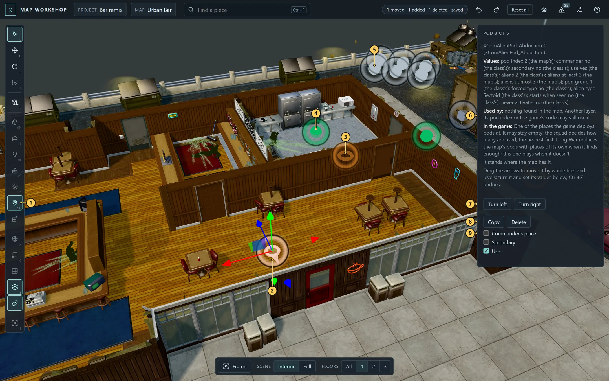
- The Views button shows the Spawns view's pin while it is on (Shift+U).
- The picked pod with its arrows: drag them to move it by whole tiles and levels.
- A pod (an orange ring): a place the game can deploy a group of aliens at.
- A Meld point (a green dot): a place a Meld canister can stand.
- About: its values, what uses it (the map's script, a wave, or nothing found), what the game does with it, and whether it stands where the map has it. A click on About folds it.
- Copy (Ctrl+D) and Delete (Delete).
- Its values: a pod's Commander's place, Secondary and Use; a Meld point has its difficulty, the turn it is destroyed on and its spawn group.
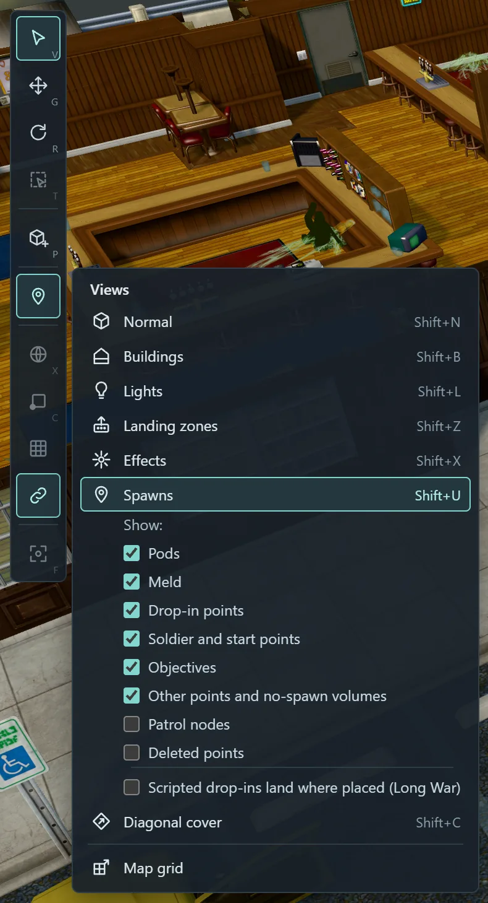
While the Spawns view is on, its row in the Views list has a switch for each kind: pods, Meld, drop-in points, soldier and start points, objectives, other points and no-spawn volumes (the covert operative's, the VIP's and loot places, and the volumes), and patrol nodes, off at first. A map's starts for multiplayer teams are never shown: a single-player battle doesn't use them.
Deleted points, off at first, draws the map's points your project deletes, pale, so you can pick one and restore it. Under the switches is Scripted drop-ins land where placed (below).
The Normal view's Spawn points and objectives draws the same markers beside the pieces.
- Click a marker to pick it, and read its panel. A landing zone the view shows is described there and edited in the Landing zones view.
- The map's own pods, Meld points and drop-in points move by the picked one's arrows, one at a time, by whole tiles and levels; Esc during a drag puts it back, and each change is one undo step. A pod and a Meld point take their values in the panel. A drop-in point turns by quarter turns (Turn left and Turn right, [ and ]), and that picks the side its units come from: a wave's units drop from high up a tile behind it and land on it facing its way, so turn it to face away from a wall or a roof edge. A pod has no turn: its first alien stands on its place and the others round it, each facing its middle, so its facing aims nothing.
- Copy makes a new pod, Meld point or no-spawn volume a tile east of the picked one, with its values (and a volume with its size): drag it from there. A pod is copied only when it is plain (no commander or secondary flag, no forced alien type, no link to another actor), and the button says why where it can't be. A new pod gets a pod index of its own. Drop-in points are moved, not copied. New ones also come from the Add panel.
- Delete takes a point or volume out of the map. One that something names (the map's script, a wave, a pod event) stays in, and the Build warns. A deleted point is hidden unless Deleted points is on; pick it then and choose Restore.
- A mission's objectives, and the points of its own streamed levels, move with their group: what a mission adds.
- The Build warns, mission by mission, when an edit leaves fewer places for pods than the map had (a floor taken from under one, a piece over it, a smaller grid), or a Meld spawn group with none of its points.
No-spawn volumes
A no-spawn volume is a box the game places no alien or civilian in when it looks for a free spot: the aliens of a pod deploying round its place, a unit dropped in, a civilian. Maps put them round parked cars and other props. The view draws each as a grey box round its marker.
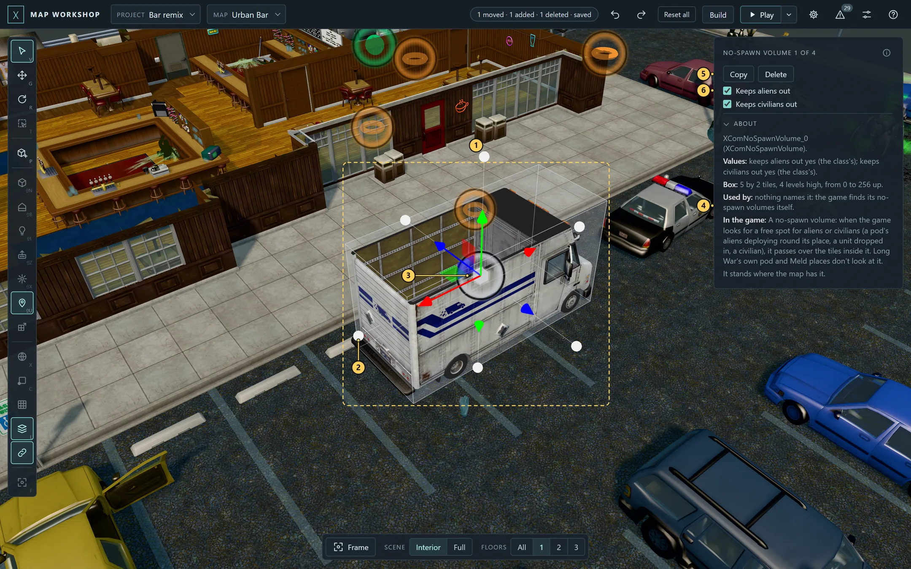
- The picked volume's box.
- A side's white handle: drag it to move that side to the tile lines and levels (Alt for steps of 8). Each side has one, the top and bottom too.
- Its arrows move the whole box by whole tiles and levels.
- What it is: its size, and what the game does with it.
- Copy (Ctrl+D) and Delete (Delete).
- Keeps aliens out and Keeps civilians out: untick one to let them in.
The Build moves and stretches the map's own volume in place, and makes a new one from one of the map's volumes. A new one comes from the Add panel's Spawn points on any map.
What the game does with them
- Pods: the game deploys the battle's pods at some of the map's pod places; a place may stay empty. Long War Rebalance replaces the map's pods with places of its own whenever it finds enough room for them, so under Long War your pod edits play where it doesn't, on the missions it leaves alone (base defence, the final mission), and on plain Enemy Within.
- Meld: the same. Long War puts the canisters at places of its own when it finds enough.
- Drop-in points: a wave of reinforcements, such as a data recovery's, comes in at its points where you put
them. A drop-in the map's script sends comes in near the squad under Long War, at a cover spot of Long War's
choosing. Tick Scripted drop-ins land where placed, under the Spawns view's row in the Views
list, to have every scripted drop-in of
the variant land on its own points: the Build adds the variant to the maps Long War leaves alone
(
ExcludeMapsinDefaultRandomSpawns.ini), and Play in game and the project manager write that line into the game. The box is greyed on plain Enemy Within, which lands them where placed anyway. - The bomb and its power nodes: under Long War they go where its bomb rules put them when it finds room, and your place is used when it doesn't.
- No-spawn volumes: the game looks for them itself; nothing names them. Long War's own places for pods and Meld don't look at them, but a pod's aliens still deploy outside them.
Diagonal cover
A unit standing in the corner of a slanted wall, inside a UFO's hull for one, can get cover along the tile's diagonal, toward the wall. The game doesn't work that out from the pieces: the map's makers marked those tiles by hand, each with the corners a unit there gets cover toward. The editor shows these diagonal cover marks, and the Build gives diagonal cover only where a mark is: the map's own, and those your project adds, changes or carries with a piece.
The Diagonal cover view (Shift+C, or its row in the tool strip's Views list) draws the marks over everything, each a tile's outline with an arrow toward each of its corners. While it is on, only marks are picked, as zones are in the Landing zones view.
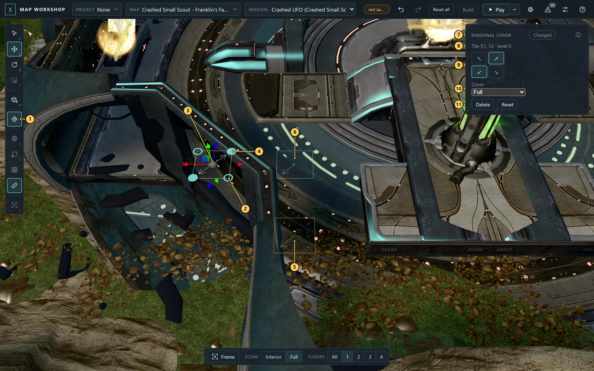
- The Views button shows the Diagonal cover view's icon while it is on.
- The picked mark, drawn in white. Click a mark to pick it; Ctrl or Shift+click adds one to the picked, or takes it out. A click beside the marks lets them go.
- Its gizmo moves the picked marks by whole tiles across and levels up, whatever Snap says: a mark belongs to a tile. Esc during a drag puts them back.
- Its four corner dots, filled where the mark has that corner: a click on one gives the tile cover toward that corner, or takes it away. Taking the last one away deletes the mark.
- A mark of the map as the map has it, in amber.
- A mark of your project, in teal: added, changed, moved, or following its piece.
- What it is: Map's own, Changed, Moved, Added, Follows its piece or Deleted.
- Its tile and level; for a moved mark, the tile it came from, and for one that follows its piece, the piece.
- Its corners as four buttons, laid out as the view shows them: a click switches one, as its dot does.
- Cover: full or half cover toward the picked marks' corners (below).
- Delete (Del) deletes the picked marks. Reset puts a map's mark you changed, moved or deleted back as the map has it.
- [ and ] turn the picked marks' corners a quarter turn. Each edit is one undo step.
- Deleted marks, the switch under the view's row in the Views list, draws the map's marks your project deletes, pale and dashed: pick one and choose Reset to bring it back.
- After a build, the panel says what the last build gave the picked mark: high or low cover, its step-outs, and a corner with no wall.
- Cover makes the picked marks' corners full or half cover, the shield a unit there shows. A new mark gives full cover, and the map's own marks show what the map gives (Full and half where their corners differ). In the view, a half corner's arrow is half as long.
- A corner with no wall still gives cover: full or half cover against nothing, as Cover says, without the step-outs a wall gives. The Build warns of it, and of a mark on a tile with no floor, which gives no cover. The build window's light step says how many tiles were marked.
- Box select doesn't take marks: Ctrl+click picks several, and the gizmo, Del, [ and ] act on them all.
- Diagonal cover in View options draws the marks in the normal view too, never picked there.
A new mark
New marks come from the Add panel: its Kind Diagonal cover has one entry.
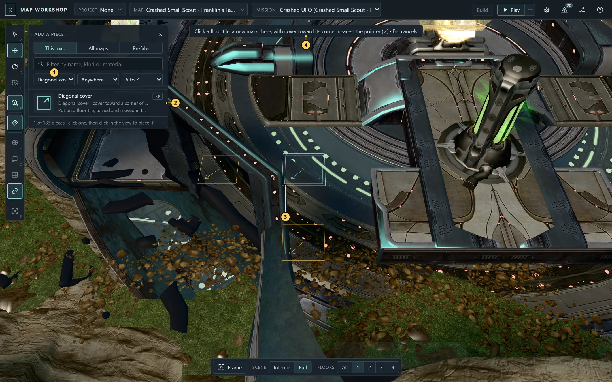
- Kind: Diagonal cover, under This map.
- Its one entry, with how many marks the map has now. Click it: the Diagonal cover view comes on.
- The new mark follows the pointer over the floor tiles, its arrow toward the corner of the tile the pointer is nearest. A click puts it down there and picks it.
- The hint says what a click does. Esc stops.
A tile holds one mark: on a marked tile, pick its mark and switch its corners instead.
Marks that follow their pieces
- A map's mark goes with its slanted wall: moved with it, turned with it (a quarter turn turns its corners; any other turn takes them to the nearest diagonals and draws the mark in the warning colour), deleted with it, and each copy of the wall carries one of its own. Its panel says Follows its piece and names the piece.
- A piece of another map, placed from All maps or with a prefab, brings the marks it gives at home.
- A mark you moved, turned or deleted by hand follows nothing from then on. A mark a copy carries is turned by hand, but moves and is deleted with its copy.
- Anything else gets diagonal cover only where you mark it: a wall you draw, a cover block, a piece standing at 45°. A project saved with version 0.7.0, whose Build found such corners by itself, builds without them until they are marked.
Missions
Missions… in the Map menu lists the base map's missions and the kinds a map can be given by its record alone: an abduction, a terror site, a bomb mission (Long War only) and a crashed or landed UFO (once a UFO prefab, or a building of kind UFO, stands on the map, with the UFO's type to choose). Tick the ones the project is for: the Build writes a map record for each, and the header's Mission picker and the play window list them. Each line says what that kind needs. A map that isn't cleared starts with all of its base map's missions; a cleared map is asked when it is cleared.
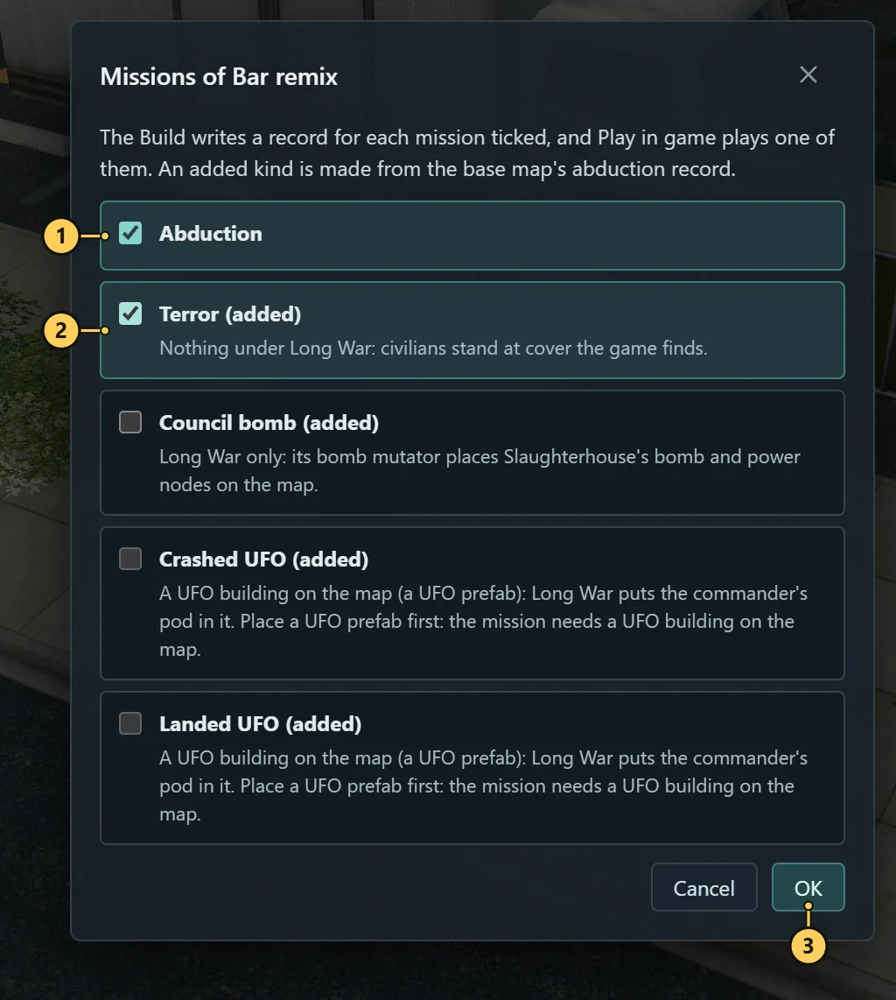
- The base map's missions: the Bar has an abduction.
- A kind added by its record, here a terror site, with what that kind needs under it.
- OK needs one ticked; the change is one undo step.
Map settings
Map settings… in the Map menu (or Sun, moon and sky… in View options) opens a window of what the map has everywhere and at no place.
- Sun, moon and sky lists the map's lights that have no place, with their brightness. View only.
- Background sound is the sound the map plays everywhere from the start: wind and traffic on the Bar, birds in a forest, crickets at night. Choose the map's own, another of the game's 26 sound beds (the Build brings it from the map that plays it), or None. Play plays the choice here, looping, until you press it again or close the window. The Volume bar under it sets how loud it is in the game, 100% being the sound's own.
- Long War Rebalance is what Long War Rebalance 3 (from 3.00.00 beta 17) is told of the map. Largest abduction is the largest abduction the map suits: Light, Moderate, Heavy or Swarming (a larger one is moved to another map), or Not set, any size. Keep Hold the Line off this map keeps those stands against waves of aliens off it. Both travel with the map in a map pack; a campaign install made by the project manager doesn't carry them, and says so. Plain Enemy Within reads neither, and the section doesn't show there unless the project has them set.
- Each change is one undo step and is saved with the project; the header counts it. A map that starts no background sound (the alien bases, the battleships, the Temple Ship and a few others) has none to change.
Map picture
Map picture… in the Map menu gives the project a picture of its own for the game's mission screens. Long War Rebalance 3 shows a map's own picture; plain Enemy Within and earlier Long War versions don't look for one. The picture is kept with a saved project, so save the project first.
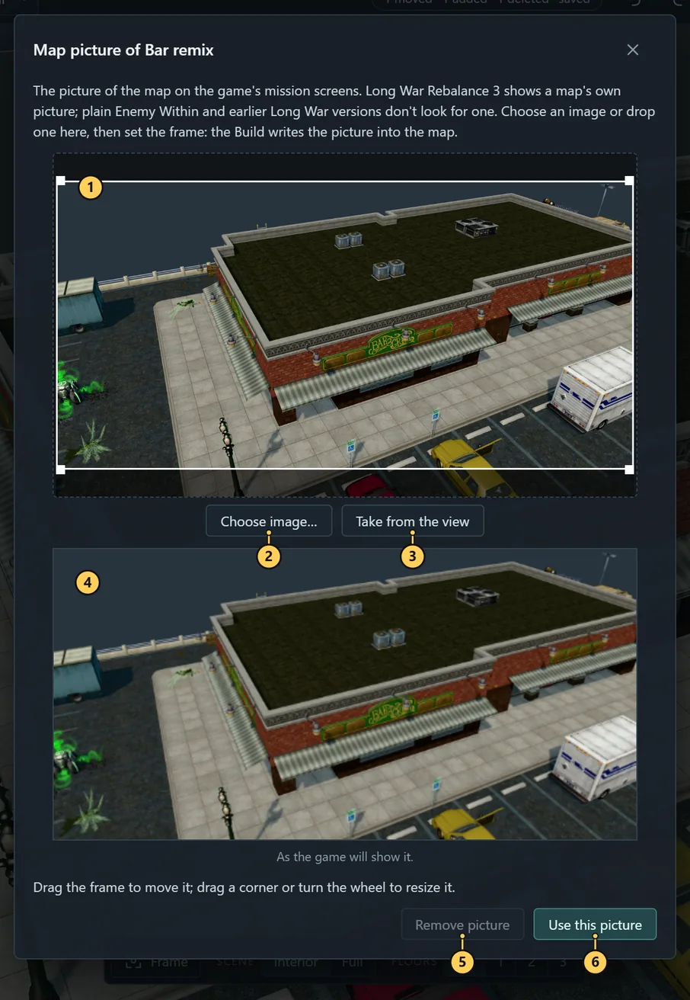
- The image, and the frame the picture is cut from, twice as wide as it is high. Drag the frame to move it; drag a corner or turn the wheel to resize it. The arrow keys and + and - do the same.
- Choose image… takes a file (.png, .jpg, .bmp or .webp). A file can be dropped on the window too.
- Take from the view uses the 3D view as it is now, without the editor's helpers: no grid, handles, markers, cover blocks or invisible floors.
- The result, as the game will show it: 512 by 256, in the game's own compression.
- Remove picture takes the project's own picture away.
- Use this picture keeps the cropped picture, and only that, with the project.
- Set up the view first for Take from the view: the camera, the floors shown, the lighting. The image is the view at the window's size, so a small window gives a soft picture.
- With no picture of its own, the window shows the base map's and says so: a map pack borrows that one for the map.
- Using a picture marks the project changed; the next save keeps it. It is not an undo step. Save as… copies the picture to the new project.
- The Build writes the picture into the map, in quick and baked builds alike. A changed picture needs a new build to reach the game.
- The project manager says of each project whether it has its own picture, the base map's or none.
Projects, building and playing
Saving your edits as a project, building it into a map, playing that in the game, and passing maps on to other players.
Project menu
A project is your set of edits on one base map. Until you save one, edits are a trial that a reload loses (the browser asks first).
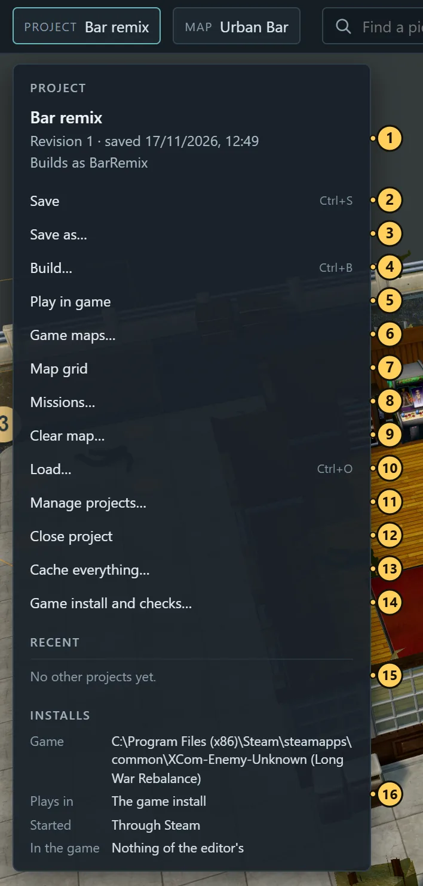
- The open project: its name, revision, when it was saved, the name its map builds as in the game (fixed when the project was first saved), and its last build.
- Save (Ctrl+S) saves the next revision. With no project open, it asks for a name.
- Save as… saves what is on screen under a name: a new project, with a map name of its own, or in place of another, which keeps its map name. More
- Open… (Ctrl+O) opens a saved project, switching map if it is of another.
- Close project goes back to the original map.
- Recent: the last three projects. Click one to open it.
- Manage projects… lists every project with its last build, to build several one after another, install them in the game for campaigns or export them as a map pack. More
Building and playing are on the header itself (Build, Play), and the map's own items are in the Map menu.
- Unsaved changes are kept for you. If the browser closes, reopening the project offers them back: Restore them or Discard them.
- Each save is a new revision, and the one before is kept as a backup beside it.
- Opening a project starts with an empty undo history.
Save as… and Open…
Save as… and Open… open a list of your projects with each one's map, revision and when it was saved. Click a column head to sort. Type a name, or pick one; Enter or a double-click chooses. Saving under another project's name asks before replacing it. Show switches between this map's projects and all of them.
Under the name, Save shows what the project builds as: the name its map has in the game and its package
(CommercialRestaurantFix.upk, which holds its baked lighting too). A new project's is its name as one word, accents taken off, at
most 24 characters (so the files that go with it fit the game's limit), numbered (_2,
_3…) when another project, a build or a map of the game already has it; the window says why. It is
fixed once the project is saved, so a build always replaces its own files: to build under another name, use
Save as… with a new name, which makes a new project. Projects saved with an earlier version keep
the names they had.
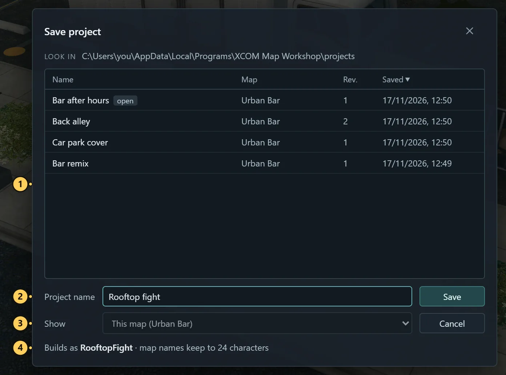
- Your projects, this map's or all of them.
- The name to save under.
- Show: this map's projects, or all.
- Builds as: the map's name in the game for that name.
Build
Build, at the right of the header (Ctrl+B), saves the project if it has changes, then makes its variant:
the map with your edits made in it, in the editor folder's builds\<variant name>\. A build replaces the project's last one, and installs nothing. The button is greyed until the edits are saved as a
project.

- Bake the lighting, off each time the panel opens.
- Off (a quick build): seconds. Cover, pathing and line of sight in the game are right; the lighting around your changes isn't: copies are lit as their originals were, and moved or deleted pieces leave their shadows behind.
- On (a baked build): a minute or two for a small edit, less when the project is built again. The editor relights the map around your changes.
- Cancel (Esc) builds nothing. On its left, about how long the build will take, from the project's last build of that kind.
- Build (Enter). Opened from Play, this button reads Build and play, with Play last build beside it when the last build is of what is on screen.
While it builds, a window covers the editor and takes no clicks: the steps with their times, a bar for the step running, and the time so far. Show the log unfolds the build's own output, and Cancel the build stops it, leaving the last good build as it was. When it ends, the window shows the build's folder or why it failed, and Save a bug report. Click the folder's path to open it in Windows Explorer, or Copy the folder path. Once built, Play in game installs the build and starts XCOM in a battle on it, as the header's Play does.
What a build holds. The map, with its baked lighting inside it, its mission records and its map picture if the project has one, and a README that lists the config lines the game needs.
Warnings don't stop a build. They say what may behave oddly in the game: a piece off its grid, a ladder that isn't expected to climb, a floor box that starts away from the cursor's floors, a landing zone over no floor, fewer places for the aliens' pods than the map had. The map is built all the same, and the build window lists them.
If the project holds an edit that can't be built at all, the build stops at once and says which piece and why. Undo that edit, or fix it as the message says, and build again.
Play
Play, at the right of the header, starts XCOM straight in a battle on the open map, with the test squad: no campaign to start, and no save to load. The editor calls this Play in game.
- With no project open it plays the original map, without edits. A small window asks which of its missions and whether to enable saving.
- With a project open it opens the play window below, to build the project and play it once built.
- In the prefab builder Test in game… stands in its place: testing a prefab.
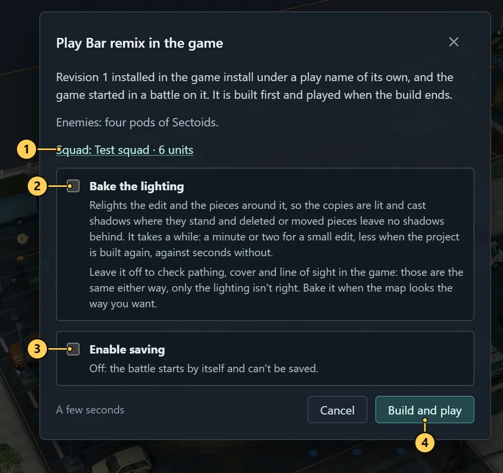
- Squad: the test squad in a line. Click it to open Test squad setup over the window; saving there brings you back.
- Bake the lighting, as in Build: leave it off while the layout is changing.
- Enable saving: a battle you can save and load. More
- Build and play builds the project, installs the build in the game under a play name of its own and starts XCOM. Play last build shows beside it when the last build is of what is on screen. On the left, about how long the build takes.
- Mission: on a map with more than one, a list at the top chooses the mission played. It starts as the header's Mission picker has it, and a line under it says what that kind goes without played this way, if anything (a terror site's civilians, a UFO's type).
- Close XCOM first. The editor installs only while the game is closed. If XCOM's launcher opens, pick Enemy Within; the battle then starts by itself.
- When XCOM closes, the editor takes the map back out of the game by itself.
- Land here, in a landing zone's panel, is Play with the squad landing at that zone.
Enable saving
A test battle starts by itself and can't be saved. Tick Enable saving to save and load in it. The tick is in the play window, in a prefab's Build and test, and in the tab on a finished build's Play in game button (its words show when you point at it).
- With it on, XCOM opens at its main menu, and F5 there starts the battle. Exit to Main Menu and F5 starts it again.
- Its saves go to new slots, never over a campaign's.
- Without it, a save never finishes. The broken file is moved out of the game's list once the game closes
(into the install's
XCOM Map Workshop\broken saves), and a campaign save it replaced is put back. - Under Long War the EXALT missions (data recovery, covert extraction, the EXALT raid) always have saving on, because Long War saves and reloads them as they start.
What a test battle is, and what it changes
What the test battle is. A plain battle on the map, started the way the game's own developers started one: the map's usual landing and aliens of the game's choosing, with the test squad (six squaddies until you set it up). It is right for cover, pathing, line of sight, destruction and lighting. It is not a campaign mission: your soldiers, the mission's story and its rewards are not in it.
- The aliens are four pods of Sectoids (five on a terror site). EXALT's missions get four pods of EXALT operatives, each with a heavy or a sniper. UFOs and alien bases come without their commander.
- On a data recovery or a covert extraction the squad's first soldier or MEC trooper lands first: the game's stand-in covert operative takes the first unit's looks, which a SHIV doesn't have.
- The squad can hold soldiers, MEC troopers and SHIVs under Long War Rebalance; on plain Enemy Within and Long War without Rebalance, soldiers.
What Play in game changes. It copies the build's files into the game and adds one line to
DefaultMaps.ini: a record for your variant, kept out of the rotation, so no campaign ever draws it
(with Long War, it also adds landing-zone lines). The files and the record take a play name, your map's name with
_Play after it, so a map pack with the same map in the game doesn't get in the way. No line the game had is changed, and it
keeps a backup of every file it changes in <game folder>\XCOM Map Workshop\. While you play, the
game rewrites one of its own settings files (XComContent.ini) with the test squad in it: the editor
keeps the file aside first and puts it back when the game closes, so leave the editor open until then. If it was
closed, the file goes back the next time the editor starts.
Through Steam. The editor asks Steam to start the game on the map, so nothing needs setting up in Steam. The game folder the editor plays in must be the one Steam runs.
Beside another copy of XCOM. Steam starts only one XCOM at a time. When the game of another game folder is
open (another copy you play), the editor starts its own folder's game itself, as a second game beside it, and
the play window says so. XCOM from the folder the editor plays in must still be closed: Play in game says so
until it is. Two games that keep their settings and saves in Documents share them, so close the other one first if
it is a campaign you care about and wasn't started with -nohomedir.
To compare with the original: close the project and choose Play. The same map plays as the game has it, and nothing is installed for its first mission. Another of its missions gets a copy of that mission's record ahead of the map's own while the game runs, taken out when it closes (Basic Training, the tutorial's map, gets a copy of its map record, since the game keeps its own switched off; Game maps' Undo everything takes it out).
The Game menu
The arrow joined to Play opens the Game menu: what a play lands with, and what the editor has done in the game.
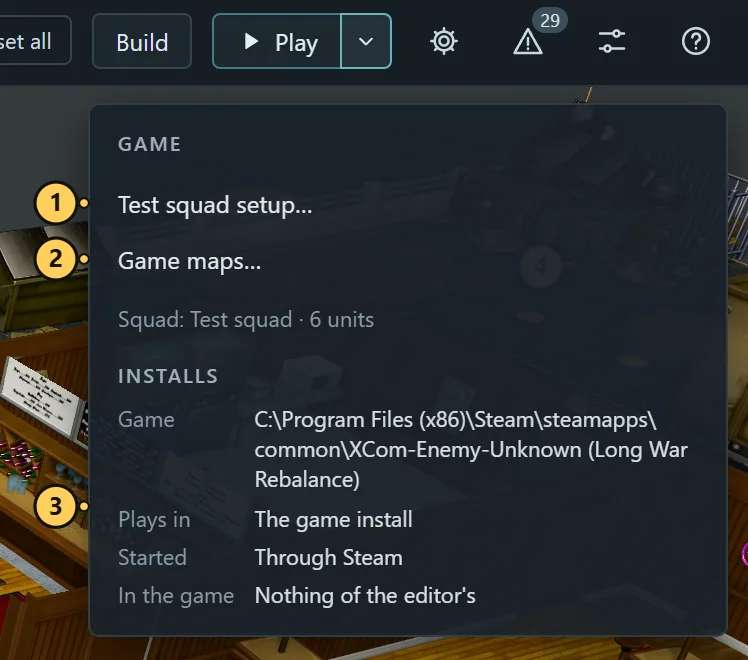
- Test squad setup…: the squad every play lands with. Under the items, a line says which (Squad: Test squad · 6 units).
- Game maps… shows the game's map records and what the editor changed of them, and undoes it.
- Installs: the game folder the editor reads, the one it plays in, how the game is started there, and what the editor has installed in it.
Test squad setup
Test squad setup… in the Game menu sets up the one squad every Play in game lands with, for maps, projects, Land here and prefab tests alike. The menu and the play window show it in a line (Squad: Test squad · 6 units); a click on that line in the play window opens the setup over it, and saving there brings you back to the play window. Until you save one, the squad is six squaddies, the ones Play in game always landed with; the panel names their gear as the install does (under Long War Rebalance a shotgun and Gauss weapons, a recoilless launcher, grenades and a medikit).
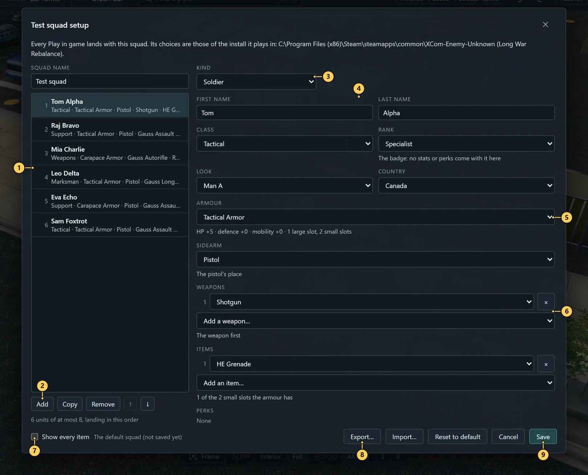
- The units in the order they land. Click one to set it up on the right.
- Add, Copy, Remove and the arrows that move a unit.
- Kind: soldier, MEC trooper or SHIV.
- Names, class, rank, look and country.
- Armour, and under it what it gives.
- Sidearm, weapons and items in order; perks and base stats follow below.
- Show every item widens the lists.
- Export…, Import… and Reset to default.
- Save (Ctrl+S); Cancel leaves the saved squad as it was.
- The units are listed on the left in the order they land: Add (a soldier at the end), Copy, Remove, and the arrows to move one. A squad has one to eight; the seventh and eighth land a tile behind the landing points, where the game finds room. A mark on a row means a warning (!) or an error (✕); point at it to read them.
- Kind: soldier, MEC trooper or SHIV. Changing it says what changed (armour, weapons, items that kind doesn't carry) and offers Undo. A MEC trooper is the MEC class in a MEC suit; a SHIV has a chassis, a gun and one name, and no class, look or country.
- Name, class, rank, look and country. The class is rookie or one of the four base classes. The rank is the
badge: no stats or perks come with it here. Names take letters, digits, spaces and
. ' -, the characters the game's command can carry; anything else is kept in the squad but stops a play until it is put right. - Armour (MEC suit, chassis): the unit's body comes from it. The line under it gives its HP, defence, mobility, slots and what it brings (Corsair armour's grapple, Archangel's flight).
- Sidearm, weapons and items, in order. A soldier's first weapon is in its hands and a second is carried too (a heavy's main gun can go in the sidearm's place and its launcher as its weapon, as the default heavy has it). A MEC lists its gun first, then its modules (kinetic strike, flamethrower). A SHIV fires its first gun only and uses no items. Items past the third go in the backpack, which holds five.
- Perks: type a name and pick it from the list. Base stats: HP, aim, defence, mobility, will and sight; an empty box is the install's own value, and armour, weapons, perks and the game's rules add to them.
- Show every item lists every item of the right size, and every perk, for odd tests; each choice the game won't treat as usual gets a warning.
The lists are those of the install Play in game uses, read from the game's own data, so a modded install offers its own items under its own names. Each change is checked at once. Errors (red) stop a play: an armour with no body, a MEC without its gun, a name the game can't take. Warnings (amber) say what the game will do with something odd, and never stop it: a SHIV's second gun stays behind, Long War Rebalance gives a MEC no grenades, and it lets one SHIV act each turn (its Robot Overlords option lifts that; the editor leaves the game's options alone). Under Long War Rebalance a battle scanner or smoke grenade gets its charges the way a campaign soldier's does. On plain Enemy Within, and Long War without Rebalance, the squad holds soldiers only, six at most.
Save (Ctrl+S) keeps the squad; the next play lands with it.
Cancel (Esc) leaves the saved squad as it was. Reset to default brings
back the six squaddies, and Import… reads a shared squad file; both change only what the window
shows until you save. Export… saves the squad to a .xcomsquad.json file to share: an
item or perk another install lacks is kept and shown as not on this install, and left out of the play with a note
(a missing armour is an error, as the body comes from it). If the
squad was saved elsewhere meanwhile (another tab), Save says so and keeps your changes: use the saved squad, or save
yours over it.
Game maps
Game maps… in the Game menu opens a list of every map record in the game's DefaultMaps.ini, by
map: its mission, whether missions draw it from the rotation or ask for it by name, and what the editor did to it.
A record of the game's own has a tick: untick it and the game stops using it (its line is commented out), tick it
to bring it back. A record a project's build replaces says by which project, and stays off while it does. The
records the editor added are listed under their base map, each with Undo, which takes that build
out of the game's maps and brings back the map it replaced. Undo everything takes all of the
editor's back out, files included: the game's config files end exactly as they were. Type to filter, or pick under
Show (changed by the editor, in rotation, asked for by name, not in use);
Switch off the shown and Switch on the shown act on every record the filter
shows. Group by lists the records by map or by mission, to see which maps each kind of
mission draws from. All of it needs XCOM closed.
Manage projects
Manage projects…, at the foot of the Project menu, opens the project manager: every project on the left, with its base map, when it was saved, whether it has a picture of its own, a badge if it is in the game, and its last build in one word: Ready, Not baked (a quick build), Out of date (saved again since) or Not built; its tooltip says when it was built and by which editor version. Type to filter, or pick All, Ready, Needs a build or In the game; tick projects one by one, a run of them with Shift+click, or all that the filter shows (Ctrl+A). A double-click opens one. The ticked projects are listed on the right, each with how it goes into campaigns: Additional, in the rotation beside the original map, or Replace, in its place (Set all to does them all). One install or one pack can replace some maps and add others. Then Install in the game (with XCOM closed) or Export map pack, which zips them for other players: Map packs.
Additional or Replace. Replacing comments out the original map's records for the missions your map has records for, so the game no longer uses it there (for the missions your project leaves out, the original stays); for a council mission, which asks for its map by name, your map takes the original's record name, and so it does for a new campaign's first mission, which asks for Commercial Alley Redux by name. Beside the original, a map is never picked for a council mission (but a bomb mission under Long War, which makes an extra one of it). The manager warns under each ticked project, without stopping you, about a build whose lighting is not baked, a build older than its project, and what happens to its missions: the ones the game asks for by name, and under Replace the ones left to the original.
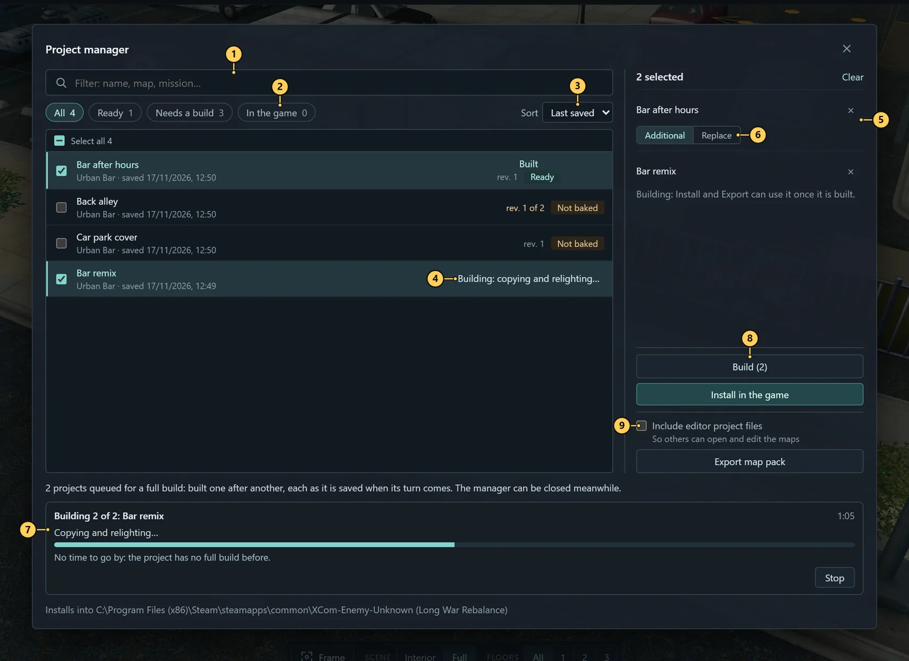
- Filter by name, map or mission.
- Show: All, Ready, Needs a build or In the game, each with how many.
- Sort: last saved, last built, name or map.
- A project's last build in one word, its revision and whether it is baked; while the queue runs, its place in the queue.
- The ticked projects, with × to take one out. A project not built yet says so.
- Additional or Replace: how this one goes into campaigns. Its warnings are listed under it.
- The queue: the project building, its step, the time so far, and about how long is left, with Stop, Resume and Clear. More
- Build and Install in the game, for the ticked projects.
- Pack: a new pack with its name and author, or one you exported before. More
- Include editor project files puts each map's project in the pack too.
- Export map pack zips the ticked projects' builds.
Building several: the queue
Build, in the project manager, builds the ticked projects one after another while you go on editing. Each is a full build, its lighting baked, as the editor's own Build makes it with Bake the lighting ticked. A project is built as it is saved when its turn comes: one saved again while it waits is built as saved last, and the open project's unsaved changes are saved first when it is ticked. Needs a build, above the list, lists the projects a full build would bring up to date (not built, not baked, built from an older revision or by another editor version), ready to tick with Ctrl+A. The manager can be closed meanwhile: a chip in the editor's header says how far the queue is, and a click on it opens the manager again.
- Following it. Each row's build state says where it is in the queue: waiting (with its place), building (with the step), built, or failed. The strip above the buttons shows the project building and its step, a bar of the projects done, how long the queue has been building, and about how long it has left, going by each project's last full build. A project with no full build before has no time to go by, and the strip says so.
- One build at a time. While the queue runs, the editor's own Build, Play in game's Build and play, and prefab tests can't start; they say why. A build already running when you press Build finishes first, and the queue waits for it. Install in the game, Export map pack and Play last build go on working with the other projects' last builds, but not with the project being built.
- Remove, on a waiting row, takes that project out of the queue. Build again adds the ticked projects at the end.
- Stop stops the build running (that project's last build stays as it was) and starts no other. Resume goes on from the first waiting project, building it from the beginning as it is saved then. Projects added while the queue is stopped wait for Resume.
- A failure is that project's alone: the queue goes on with the next, and the strip lists each failure with its reason. Build it again once mended.
- If the editor closes, or the computer restarts, while the queue builds, its build ends with it. The next time the editor starts, the queue is as it was, stopped, and Resume goes on. A build that had already put its package in counts as built.
- Clear takes every row and result out of the queue once it is stopped or finished. It deletes no project and no build.
- While the queue runs or is stopped, Game install and checks won't switch to another game install: clear the queue first.
Map packs
Export map pack, in the project manager, zips the ticked projects' builds for other players:
one file, <pack> v<n>.zip, in the builds folder's Map packs. It holds the pack's folder,
two scripts and a README, and needs no editor to use.
- For Long War Rebalance 3 (3.00.00 beta 15 or later) the pack is a drop-in: its folder, copied into the
game's
CookedPCConsole, is read by the game as it starts, and deleting the folder takes the maps out again. No file of the game changes. The folder holds the maps and a map pack card, a small file that tells Long War Rebalance which maps the pack has and what each is for. - Install.cmd asks for the game folder (it offers the Steam install it finds), stops if XCOM is running,
and looks whether that game reads map pack cards. On Long War Rebalance 3 it does the copying for you: the
pack's folder goes into
CookedPCConsoleand no config file is touched, but for one case: a map whose project leaves scripted drop-ins where placed gets its line inDefaultRandomSpawns.ini, which a card can't carry. On any other install (Long War Rebalance 2, Long War, plain Enemy Within) it goes the classic way: it keeps a copy of the config files as they are, copies the maps' files intoCookedPCConsoleitself and adds their lines toDefaultMaps.ini(commenting out the original's lines for a map that replaces it), with the landing zones where the install has Long War's file. A map whose base map that game has no line for is left out. - Uninstall.cmd takes out what Install.cmd put in, either way: the files it copied and the lines it added
go, and the lines it commented out come back. After the classic way it says whether
DefaultMaps.iniis exactly as it was before the pack. - Each map goes in as Additional or Replace, as you set it for its project: one pack can replace some maps and add others.
- A map's picture goes with it. A map without a picture of its own borrows its base map's.
- Include editor project files puts each map's project in the pack too, with its picture, so others can open and change it: they copy it into their projects folder and choose Open….
The Pack fields (item 9 of the project manager's picture):
- Pack: New pack, or a pack you exported before. Choosing a saved pack ticks its maps, each its way, and says its card number, its folder and the version the export will be. A project of it that is gone is named and left out.
- Name and By: the new pack's name, and its author if you like; both are written into the card and the READMEs.
- A pack exported again is its next version, under the same folder and card number. Its Install.cmd takes out the version an Install.cmd put in before, then installs the new one. Whoever copies the folder by hand deletes the old folder first: the file of a map the new version no longer has would otherwise stay in it.
- Forget pack makes the editor forget a saved pack. Its zips stay in the Map packs folder, and a pack is offered again from its zip.
The export warns, without stopping, of a build whose lighting is not baked or that is older than its project, two maps of the pack the game would show under one name, and a card number another pack in your install already has.
Settings
Settings, the gear at the right of the header, holds the editor's own setup.
- Game install and checks lists the game installs found in Steam, takes another folder typed in or picked with Browse…, and Use this install switches to it without a restart. Below, the editor's checks: each one is OK, or says what to do.
- Cache everything… reads every piece of the game's maps into the editor's cache now, so placing a piece of another map or opening a prefab never waits for it. Tick Every map, ready to open to prepare every map as well, which takes much longer. The window says how many there are, about how long it takes and how much disk space it needs. Start runs it in the background with a progress bar: you can keep working, close the window and open it again later. Cancel stops it at any moment; what was read so far stays, and Carry on picks up from there. What is already cached is left alone, and what a game update or a newer editor made out of date is read again.
Other windows
- Banners at the top of the view carry messages that need an answer, such as a project made on a different version of the map.
- A map that needs preparing again. When the editor's saved copy of a map is older than the editor needs, a box in the middle of the window says so as the map opens, and again if you ask for a build. Prepare now reads the map from the game again, in about half a minute, and opens it afresh; your projects are kept. Later leaves a banner with the same offer. A build that stopped for this reason has a Prepare the map button in its window.
How pieces move and what builds
Kinds of pieces
| Kind | Examples | How it moves | Builds |
|---|---|---|---|
| Scenery, destructible props | Tables, crates, dumpsters, windows, signs | Freely, on every axis | Yes |
| Physics props | Bodies, loose objects | Freely | Yes |
| Collectibles | UFO power cores | Freely | Yes; a copy counts as loot too |
| Cars and vans | With their glass, doors and light bars | Freely, all parts together; surest on the grid | Yes |
| Doors with a frame | Building doors | Freely, leaf and frame together; surest on the grid | Yes |
| Doors without a frame | UFO and alien doors | Freely; surest on the grid | Yes |
| Ladders | Freely; surest on the grid | Yes; it climbs where both ends meet floor, and is warned of where they don't | |
| Fracturing pieces | Walls, storey floors, roof slabs, a bar's counter | Freely; surest on the grid | Yes; a wall, floor or roof can be built broken |
| Walls, floors, roofs and ground you draw | The Build menu's pieces | Freely, at any angle; sized by their handles | Yes; walls, floors and roofs break as the game's do |
| Cover blocks, invisible floors | Invisible pieces | Freely; sized by their handles | Yes |
| Lights | Placed point and spot lights | Freely | Yes; baked builds only show them right |
| Effects, sounds, lens flares | Fires, smoke, an idle engine, a lamp's glint | Freely; a carried effect with its piece | Yes, in a quick build too |
| Floor boxes | Buildings, yours and the map's | Whole tiles and levels, never turned alone | Yes |
| Landing zones | Where the squad lands | Freely; in the snap's steps with snap on; quarter turns | Yes |
| Spawn points | Pods, Meld points, drop-in points, no-spawn volumes | One at a time, whole tiles and levels, quarter turns (drop-in points); a volume's sides by its handles | Yes |
| A mission's objects | The bomb and its power nodes, capture points | With their group, whole tiles and levels | Yes |
| Diagonal cover marks | A tile's cover toward its corners | Whole tiles and levels, quarter turns; a map's mark with its wall | Yes |
| Patch helpers | Long War Rebalance's invisible cover and blockers | Not at all | Left as they are |
"Freely" means in the snap setting's steps, which govern every move and turn: with snap off, anywhere.
The grid rule and Game pose
The game saves some things per tile: where a ladder can be climbed, which part of a wall stands on which tile. For the Build to carry those along exactly, a ladder, door, car, van or fracturing piece must end up a whole number of tiles (96 units) and storeys (64 units) from where its original stands, turned by quarter turns.
- It moves as any piece does, in the snap setting's steps. One on its grid stays on it while it is moved with Snap at 96, as those steps are whole tiles and storeys.
- Off the grid, the piece panel shows an Off the grid chip (its tooltip says what it misses) and the Build warns: the piece is built where it stands, but what the map saved for its tiles no longer fits exactly.
- Game pose, in the piece panel's Align section, moves it to the nearest place and turn its rule allows, with whatever moves with it, in one undo step.
- A piece from another map stands on this map's tiles as it stood on its own map's.
- Walls, floors, roofs and ground you draw have no such rule: they stand anywhere, at any angle.
Ladders
The game makes a ladder's climb between two floors: the tile at its foot, and the tile at its top or the one below that. Select a ladder and the editor marks both ends, green where there is floor and red where there is none.
- What counts as floor: the map's own floor, a flat piece of your project with standing room over it (a deck, a slab), and an invisible floor, on any level the grid has.
- A ladder with a red end is built all the same, with a warning: the game is not expected to make its climb. Earlier versions refused to build it.
Floor pieces and Level
A floor piece is one the game walks on: asphalt, a sidewalk, a building's storey floor. The piece list gathers them under Kind: Floors, each with its size in tiles. A floor piece is placed and moved as any piece is: on what the cursor points at, in the snap setting's steps. Level, in the piece panel's Align section, then puts it at the height its kind has in the map moved by whole levels, the nearest, so a sidewalk set down next to another sits at the same height instead of on top of it.
What a mission adds
The game loads more than the map: each mission that uses a map adds its own objects, and Long War Rebalance adds a patch to most maps, mostly invisible cover blocks and blockers. The editor shows the patch so you can plan around it, but it isn't part of your project. So if you move a wrecked car that Long War Rebalance has put invisible cover over, the cover stays where it was. Untick Hide patch helpers in View options to see it.
A mission's own objects (the bomb and its power nodes, the data recovery's capture points, radar arrays, the operative's and the VIP's places, the waves' drop-in points) show as markers with the mission the header picks, in the Spawns view and with the Normal view's Spawn points and objectives. Click one: its panel says what it is, the group it belongs to and what lists it. With it picked, drag its arrows to move it with its group (a capture point with its volume, a power node with its button, effects and rebuild volume) by whole tiles and levels; Esc during a drag puts it back, and Ctrl+Z undoes. The Build moves them in its own copy of the mission's stream, which only that mission's record uses, so every reference the mission's script has to them still holds. It warns when an edit leaves an objective or a squad's, operative's or VIP's place with no floor, or inside a piece, mission by mission, so you can move it or drop the mission.
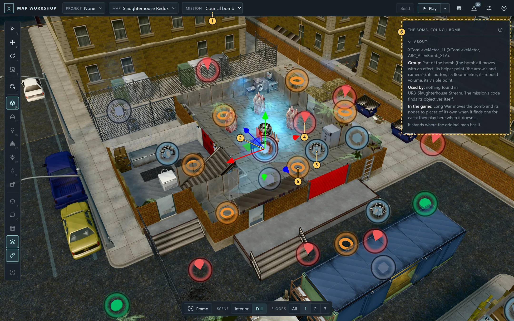
- Mission in the header: the mission whose objects are shown, here the council bomb.
- The picked object's arrows: the bomb moves with its group, by whole tiles and levels.
- A power node, with its button's marker (a blue gem, a thing to use) on it: they move together.
- A drop-in point (a red arrow), where a wave of aliens comes in.
- A pod (an orange ring): where a group of aliens starts.
- Its panel: what it is, what moves with it, and what lists it.
Copies
- A copy is a new piece with its own name. A copied car's parts are linked to each other, not to the original.
- A copied wall doesn't break the pictures, shelves and neighbouring walls its original breaks, unless they were copied along with it in the same move.
- A copied group is a new group of the copies, with the same options.
Keyboard and mouse
| Key | Does |
|---|---|
| V · G · R | Select · Move · Rotate |
| T | Box select; then Enter selects what is inside, Shift+Enter adds it to the selection, Esc puts the box away |
| P | Add: open or close the piece list |
| X | World axes or the piece's own |
| C | Pivot: the piece's own origin, or the selection's middle (a piece turns in place) |
| B | Show or hide the play area; with a made wall, floor or roof or one of the map's fracturing pieces picked, Break on or off |
| L | Align to grid: the selection onto the nearest step of the snap setting |
| Shift+N | The Normal view |
| Shift+B | The Buildings view on or off (only boxes are selected) |
| Shift+L | The Lights view on or off (only lights are selected) |
| Shift+Z | The Landing zones view on or off (only landing zones are selected) |
| G · R · [ ] | In the Landing zones view: the picked zone's arrows · its ring · a quarter turn either way |
| Ctrl+D · Del | In the Landing zones view: copy the picked zone · delete it |
| Shift+X | The Effects view on or off (only effects, sounds and lens flares are selected) |
| Shift+U | The Spawns view on or off (only spawn points and objectives are selected) |
| [ ] · Ctrl+D · Del | A picked spawn point: a quarter turn either way (a drop-in point) · copy it (a pod or a Meld point) · delete it |
| Shift+C | The Diagonal cover view on or off (only diagonal cover marks are picked) |
| [ ] · Del | In the Diagonal cover view: turn the picked marks' corners a quarter either way · delete them |
| Shift+drag a move handle | Drag a copy of the selection; the original stays |
| N | In the Buildings view: New box |
| Shift while drawing | From the Build menu: keep drawing after each wall, floor or ground shape (Esc stops) |
| I | While drawing from the Build menu, or in the look picker: take the look of a piece clicked in the view |
| J held | While dragging a made wall's end: take it to the nearest other wall's end, where they meet in a mitred corner |
| Tab | With a made piece's Texture mapping open: pick its next surface |
| Alt+drag | In the Buildings view: stretch a box by steps of 8 units. On a gap's handle: steps of 8 |
| O | Solo the selected lights |
| F, double-click | Frame the selection |
| M | Map browser |
| W A S D, arrow keys | Move the camera: across the map, or along the view with View options' Keys move along the view (Shift: faster) |
| Q · E | Turn the camera left or right (Shift: faster) |
| Ctrl+C · Ctrl+X · Ctrl+V | Copy · Cut · Paste (then click to place) |
| R · Shift+R | While placing: turn a quarter turn, either way |
| Shift+click | While placing: place and keep placing |
| Del | Delete the selection |
| Ctrl+G | Group the selection |
| Ctrl+Shift+G | Ungroup |
| Ctrl+Z · Ctrl+Y | Undo · Redo |
| Ctrl+S · Ctrl+O | Save the project · Open a project |
| Ctrl+B | Build |
| Esc | Cancel a drag, stop placing, close a menu, or clear the selection |
The mouse: drag to orbit, right-drag to pan, scroll to zoom, click to select, Ctrl or Shift+click to add to the selection.
What it can't do yet
This is a preview. Before you plan a map around it, these are the things it does not do.
Maps and pieces
- A new map starts from one of the game's. Clear map empties it, and you build on its light, sky and landing. The sun, the time of day and the mission stay the base map's.
- Only the game's own models, materials and sounds. Any piece of any map in your install can be placed, and walls, floors, roofs and ground you draw take the look of the game's, but you can't import your own models, textures or sounds.
- The game's pieces move and turn only. No resizing or reshaping, and no changing a piece's material or colour. What you draw yourself is sized by its handles. A light's colour can be changed, and an effect's size and particle settings and a sound's reach, volume and pitch: Effects and sounds.
- No free ground sculpting. The map's ground is made of pieces: you can move, copy and delete them. New ground is patches, blocks, ramps and rocks, not a surface you push and pull.
- Only the maps your install plays. Maps the game's files hold but its map list leaves out aren't offered.
Missions and gameplay
- No mission scripting. What the mission's script does, its timers and triggers, and when reinforcements come stay as the base map has them. Where things are can be changed: the squad's landing zones, and the aliens' pods, the Meld and the drop-in points in the Spawns view. A drop-in point can be moved, not added.
- Pieces the mission script uses are best left where they are. A piece marked Mission script, moved or deleted, builds, but the script goes on acting on the original; one of the landing's own pieces, moved or deleted as a piece, breaks Long War's landing. The Build warns of both. Move the landing zone instead.
- Long War Rebalance's invisible cover and blockers can't be edited. They show for reference. A mission's own objects (a bomb, the data recovery's capture points) can be moved, but not copied or deleted: what a mission adds.
- Under Long War, the aliens' pods and the Meld go where its rules put them whenever it finds room for them, and so do the bomb and its power nodes. Your places for them play where it doesn't, and on plain Enemy Within: what the game does with them.
- Cover, pathing and line of sight aren't shown or set by hand, but for diagonal cover, which is marked by hand. The game works the rest out from the pieces when the map loads. The editor's tile grid is a guide, not the game's answer.
- No play-testing in the editor. No units, no fog of war, no destruction. You test in the game.
- No campaign in a test battle. Play in game starts the mission you pick, with the test squad (six squaddies until you set it up) and four Sectoid pods (EXALT pods on EXALT's missions), not your campaign's soldiers. The battle starts by itself and can't be saved unless you tick Enable saving. UFOs and alien bases come without their commander.
Building
- Some pieces are surest on the grid: the map's ladders, doors, cars, vans, walls, storey floors and roof slabs build exactly by whole tiles and quarter turns from where their originals stand. Off that grid they build with a warning, and Game pose puts one back. More
- A ladder needs floor at both ends where you put it, or the Build warns that it isn't expected to climb.
- The Build warns far more often than it refuses. A warning means "this may behave oddly in the game", and the map is built all the same. That includes a single part of a car or a door edited on its own. Pieces of a kind the Build has not made before, and pieces of other maps the library used to hold back, are built as any other. A piece the Build can't make at all is left out and listed in the build window, and the rest is built. The prefab test does the same and waits for Launch test when it left something out.
- Some lights are view only: the sun, moon and sky, the glow of lit surfaces, and lights the map's scripts or a breakable piece switch. New lights are point or spot lights.
- Light edits need a baked build. A quick build makes them without their lighting.
- One build at a time, and a baked build takes minutes.
The view
- It is not the game's picture. Colours and lighting are approximate, most lights cast no shadows, and there is no fog, sky, decals or animation. Doors stand closed. Effects are drawn as a rough likeness, from their own textures and colours but without the game's shaders: Effects as they look.
- No preview of the baked lighting. Only the game shows what a build's lighting looks like.
The program
- Windows 10 or 11 only, 64-bit, for one person on one computer.
- Developed and tested mainly with Long War Rebalance. It is meant to work with plain Enemy Within too, but that is less tested: reports from plain Enemy Within, or any setup other than Long War Rebalance, are welcome (Reporting a problem).
- A project or prefab saved in a newer version doesn't open in an older one. A newer version opens what an older one saved, and builds you made keep playing.
- It installs only while the game is closed. Play starts XCOM itself, through Steam.
Things to expect in the game from a variant come next: In the game: known limits.
In the game: known limits
- Start a fresh mission after installing. A tactical save from before the install ignores the new pieces' cover.
- Long War Rebalance's invisible cover stays put. It doesn't follow the piece it covers.
- Under Long War, the aliens' pods and the Meld go where its rules put them when it finds room, and its drop-in rules bring scripted reinforcements in near the squad: what the game does with spawn points.
- A drawn floor off the tile lines is floor only on the tiles whose middle it covers, and a drawn wall inside a row of tiles takes those tiles: floors, walls.
- Diagonal cover is only where a mark is. A slanted wall you draw, or a cover block at 45°, gives none in its corners until you mark them.
- A blast takes diagonal cover away. When something is destroyed, the game works the tiles round it out again from what still stands, and that never gives diagonal cover back: a marked tile it reaches loses its cover, even where the slanted wall still stands. The maps' own marks go the same way. Under Long War a meld canister does it too: the game puts them in random places as a mission starts, and one next to a marked tile takes that tile's diagonal cover for the mission.
- The squad may land on a new piece. Keep copies off the soldier tiles, or move the landing zone.
- A quick build's lighting is wrong on purpose. Copies are lit as their originals were and cast no shadows, and a deleted or changed light's old pool stays on the floor. Bake the lighting for the finished map.
- The editor's colours are approximate. Judge the lighting, and how an effect looks, in the game.
- On plain Enemy Within, a moved landing leaves the grounded Skyranger's dust where the landing was, in the editor as in the game. Under Long War the dust goes with the Skyranger when the battle starts.
- If something looks wrong in the game, please report it.
New in this version
What has been added since version 0.4.1, each with the section that explains it: first what 0.7.0 adds, then 0.6.0, 0.5.3, 0.5.2, 0.5.1 and 0.5.0.
| New in 0.7.0 | What it is |
|---|---|
| Drawn pieces at any size and angle | Walls, floors, roofs and ground of any size, sized by white handles on stems; walls of any thickness meeting at any angle in mitred corners; floors turned or tipped. |
| Texture mapping | A pattern of your own on a drawn piece's surface: its size, offset and turn set in the fold or dragged by its handles, or aligned to the world. |
| Snap for every move, size and turn | Smooth with snap off; with snap on, steps counted from where a drag starts, so a piece off the grid keeps its offset. |
| Align to grid, level and game pose | A piece brought onto the grid (L), a floor piece to a storey's height, a ladder or door to its game pose. Level snap and the recipe snap are gone. |
| Diagonal cover | The map's diagonal cover tiles shown in View options, and kept by the Build. |
| Map settings | The sun, moon and sky, and the map's background sound: the map's own, another of the game's or none, at the volume you set. |
| Clear map takes the triggers | A cleared map's touch triggers, water volumes and sight points go with its pieces, unless you keep them. |
| New in 0.6.0 | What it is |
|---|---|
| Walls, rooms, floors, roofs and ground of your own | The Build menu on the Add button: pick a tool and drag it out in the view. Walls take doorways and windows, and a rock is shaped by its points. |
| The look picker | A drawn piece in the look of any wall, floor, roof or ground of your game's maps, chosen from pictures or taken from a piece in the view. |
| Break and Repair | Fragments knocked out of a drawn piece, or of one of the map's own breakable pieces, so the battle starts with the damage. |
| Effects and sounds | The Effects view: the map's fires, smoke, sounds and lens flares moved, copied, deleted and tuned, and those of other maps added. |
| Spawn points | The Spawns view: where the aliens' pods, the Meld and the drop-ins start, moved, copied and added, with no-spawn volumes. |
| Map picture | The picture the game shows for your map on its mission screens, from an image or from the view. |
| Map packs for Long War Rebalance 3 | A pack that is one folder dropped into the game, with no file of the game changed. The editor remembers your packs. |
| The header's menus | Project and Map menus, Build and Play as buttons, the Game menu on Play's arrow, and setup under Settings. Find a piece is gone. |
| Add to group | The selected pieces join a group that is already there. |
| New in 0.5.3 | What it is |
|---|---|
| Piece flags | Five flags in the piece panel: Blocks walking, Gives cover, Blocks sight, Floor and Mouse picks it. The Build writes them on the piece and works its tiles out again. |
| Select all of a kind | Every piece drawn with the same mesh as the picked one, or only those inside a drawn box, to change them all at once. |
| Test squad setup | The squad every Play in game lands with, set up from the Game menu (the arrow beside Play): under Long War Rebalance up to eight soldiers, MEC troopers and SHIVs, with their gear, perks and stats. |
| Build in the project manager | Full builds of the ticked projects one after another while you go on editing, followed by a chip in the header. |
| The project manager | Laid out again: your projects on the left with their last build, the ticked ones on the right, each with its own Additional or Replace. A map pack can carry the maps' editor projects. |
| Maps named after their project | A new project builds as its own name, shown under the name in Save and fixed once saved. |
| 256 tiles a side | Map grid makes maps up to 256 tiles across and deep. |
| New in 0.5.2 | What it is |
|---|---|
| The mission you pick | Play in game plays the mission the header's Mission picker shows, not always an abduction. |
| Missions… | Which of the base map's missions a project is for, and missions a map can be given by its record (abduction, terror, a council bomb, a UFO). Clear map asks what the map is for. |
| A mission's objects | View options' Mission objects marks what the picked mission adds. Move one with its group, and the Build warns when an edit takes the floor from under one. |
| Enable saving | A test battle you can save and load: XCOM opens at its main menu and F5 starts the battle. |
| Cover blocks of any size | Sized with the dots on their faces. The panel says what the game makes of a block smaller than a tile and what it does to line of sight. |
| Blockers | A cover block with Cover None stops units walking there without giving cover. |
| Camera speeds and the centre pivot | Sliders for moving and turning speed in View options, and a Pivot button (C) on the tool strip to move and turn about the selection's centre. |
| New in 0.5.1 | What it is |
|---|---|
| Cache everything | Settings (the gear) reads every piece of the game's maps ahead of use, and every map if you ask, with a progress bar you can cancel. |
| 30 levels | Maps, prefabs and their test stage go up to 30 levels high, where 18 was the limit. |
| The builder's Problems chip | What Test in game would say of a prefab, without building it. |
| More is built | A piece the Build can't make is left out and listed, and the rest of the map is built. Pieces of a kind the Build had not made before are built too. Prefabs that are too big or hold odd light values are warned of, not refused. |
| A faster editor | A large prefab opens in about a second instead of twenty, edits and pastes with many pieces are several times quicker, and slow steps show a bar. |
| New in 0.5.0 | What it is |
|---|---|
| Pieces from other maps | The piece list's All maps: any piece of any map in your install, placed in the map you are editing. Favourites and recently used pieces are kept. |
| Prefabs | A set of pieces, or a whole building with its lights, saved to be placed again in any map and passed on as a file. The prefab builder makes one from nothing, and Test in game plays it on a blank stage. |
| Buildings | The Buildings view: floor boxes drawn over a building so its roof hides and its walls cut down in the game. The map's own buildings can be changed the same way. |
| Clear map | Takes every piece off a map, to build a new one on its light and landing. |
| Map grid | The play area resized by handles: larger and taller on any map, and any size once it is cleared. |
| Landing zones | Where the squad lands, moved, turned, added and deleted in a view of their own, for Long War and for plain Enemy Within. Land here plays a zone. |
| Box select | A box drawn over the ground selects everything inside it. |
| Four views | Normal, Buildings, Lights and Landing zones: each selects its own kind of thing only. The Normal view can show lights and floor boxes beside the pieces. |
| Groups in groups | A group can hold other groups, and lights and buildings too, so a house moves with its lamps and its floor boxes. |
| Cover blocks that break | A cover block grouped with a breakable piece goes when the piece is destroyed. |
| A copy by dragging | Hold Shift as you take a move handle to drag a copy. |
| What builds | Doors without a frame build now. A ladder that isn't expected to climb is warned of and built, where it used to stop the build. |
Where things are
| What | Where |
|---|---|
| Settings | Documents\XCOM Map Workshop\settings.json |
| The test squad | Documents\XCOM Map Workshop\test-squad.json (beside the settings; the squad before the last save in test-squad.prev.json) |
| Projects | <editor folder>\projects\ (one .json file each) |
| Prefabs | Beside the projects by default, or the folder chosen in settings.json (one .json file each) |
| Builds | <editor folder>\builds\ |
| Map packs | <editor folder>\builds\Map packs\ (the zips); what the editor remembers of each pack in <editor folder>\projects\packs\ |
| Map pictures | With the projects, in their .workshop folder |
| Opened maps | Documents\XCOM Map Workshop\cache\ (safe to delete: maps are read again when opened) |
| Build logs | <editor folder>\builds\.work\<variant>-<time>\logs\ |
| What Play in game installed | <game folder>\XCOM Map Workshop\ (records and backups) |
The editor folder is where the editor is installed (by default %LOCALAPPDATA%\Programs\XCOM Map Workshop), or where you
unpacked the zip. Upgrading keeps your projects, builds and prefabs. The editor uses Documents\XCOM Map
Workshop when the install folder is read-only and keeps existing data folders there available. Use
Game install and checks… (under Settings) to see which folders are in use. With the zip, unpack a new version
over the old folder, or move projects, builds and prefabs into the new one.
Problems, and removing it
If something seems wrong
- Settings (the gear), Game install and checks… lists what the editor needs and what to do about anything missing.
- If the browser can't open the editor's page, or a save fails, the console window was probably closed: start XCOM Map Workshop again.
- A map that looks wrong after an update of the game or of Long War Rebalance: delete its folder in the cache and open it again.
Reporting a problem
Reports from any setup are welcome, plain Enemy Within included. Say which version you have: it is at the bottom of the ? menu, in VERSION.txt and in
each build's manifest.json. After a build, or a failed or cancelled one, Save a bug report
in the build window zips the project and the build's logs into the builds folder and copies the zip's path; click
the path to see the zip in Windows Explorer. Send that zip with what you did and what you saw; a screenshot helps.
Removing the editor
- Choose Game maps… (the arrow beside Play), Undo everything first, if you played or installed a project in the game.
- Uninstall XCOM Map Workshop from Windows' Settings, Apps. If you used the zip, delete its folder.
- Uninstalling leaves your projects, builds and prefabs in the editor folder: delete it too if you don't need them.
Documents\XCOM Map Workshopkeeps the settings and the opened maps.